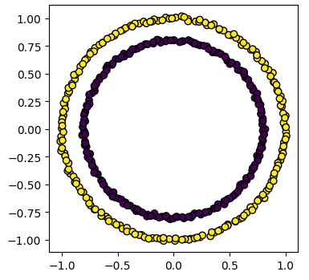
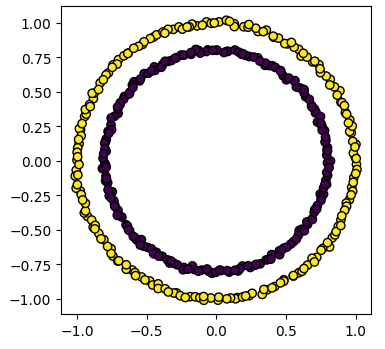

Content from Introduction
Last updated on 2025-11-07 | Edit this page
Overview
Questions
- What is machine learning?
- What are some useful machine learning techniques?
Objectives
- Gain an overview of what machine learning is and the techniques available.
- Understand how machine learning, deep learning, and artificial intelligence differ.
- Be aware of some caveats when using machine mearning.
What is machine learning?
Machine learning is a set of techniques that enable computers to use data to improve their performance in a given task. This is similar in concept to how humans learn to make predictions based upon previous experience and knowledge. Machine learning is “data-driven”, meaning that it uses the underlying statistics of a set of data to achieve a task.
Machine learning encompasses a wide range of tasks and activities, but broadly speaking it can be used to: find trends in a dataset, classify data into groups or categories, make predictions based upon data, and even “learn” how to interact with an environment when provided with goals to achieve.
Artificial intelligence vs machine learning
The term machine learning (ML) is often mentioned alongside artificial intelligence (AI) and deep learning (DL). Deep learning is a subset of machine learning, and machine learning is a subset of artificial intelligence.
AI is increasingly being used as a catch-all term to describe things that encompass ML and DL systems - from simple email spam filters, to more complex image recognition systems, to large language models such as ChatGPT. The more specific term “Artificial General Intelligence” (AGI) is used to describe a system possessing a “general intelligence” that can be applied to solve a diverse range of problems, often mimicking the behaviour of intelligent biological systems. Modern attempts at AGI are getting close to fooling humans, but while there have been great advances in AI research, human-like intelligence is only possible in a few specialist areas.
ML refers to techniques where a computer can “learn” patterns in data, usually by being shown many training examples. While ML algorithms can learn to solve specific problems, or multiple similar problems, they are not considered to possess a general intelligence. ML algorithms often need hundreds or thousands of examples to learn a task and are confined to activities such as simple classifications. A human-like system could learn much quicker than this, and potentially learn from a single example by using it’s knowledge of many other problems.
DL is a particular field of machine learning where algorithms called neural networks are used to create highly complex systems. Large collections of neural networks are able to learn from vast quantities of data. Deep learning can be used to solve a wide range of problems, but it can also require huge amounts of input data and computational resources to train.
The image below shows the relationships between artificial intelligence, machine learning and deep learning.
 The image above is by Tukijaaliwa, CC BY-SA 4.0, via Wikimedia Commons,
original source
The image above is by Tukijaaliwa, CC BY-SA 4.0, via Wikimedia Commons,
original source
Machine learning in our daily lives
Machine learning has quickly become an important technology and is now frequently used to perform services we encounter in our daily lives. Here are just a few examples:
- Banks look for trends in transaction data to detect outliers that may be fraudulent
- Email inboxes use text to decide whether an email is spam or not, and adjust their rules based upon how we flag emails
- Travel apps use live and historic data to estimate traffic, travel times, and journey routes
- Retail companies and streaming services use data to recommend new content we might like based upon our demographic and historical preferences
- Image, object, and pattern recognition is used to identify humans and vehicles, capture text, generate subtitles, and much more
- Self-driving cars and robots use object detection and performance feedback to improve their interaction with the world
Where else have you encountered machine learning already?
Now that we have explored machine learning in a bit more detail, discuss with the person next to you: 1. Where else have I seen machine learning in use? 2. What kind of input data does that machine learning system use to make predictions/classifications? 3. Is there any evidence that your interaction with the system contributes to further training? 4. Do you have any examples of the system failing?
Limitations of machine learning
Like any other systems machine learning has limitations, caveats, and “gotchas” to be aware of that may impact the accuracy and performance of a machine learning system.
Garbage in = garbage out
There is a classic expression in computer science: “garbage in = garbage out”. This means that if the input data we use is garbage then the ouput will be too. If, for example, we try to use a machine learning system to find a link between two unlinked variables then it may well manage to produce a model attempting this, but the output will be meaningless.
Biases due to training data
The performance of a ML system depends on the breadth and quality of input data used to train it. If the input data contains biases or blind spots then these will be reflected in the ML system. For example, if we collect data on public transport use from only high socioeconomic areas, the resulting input data may be biased due to a range of factors that may increase the likelihood of people from those areas using private transport vs public options.
Extrapolation
We can only make reliable predictions about data which is in the same range as our training data. If we try to extrapolate beyond the boundaries of the training data we cannot be confident in our results. As we shall see some algorithms are better suited (or less suited) to extrapolation than others.
Getting started with Scikit-Learn
About Scikit-Learn
Scikit-Learn is a python package designed to give access to well-known machine learning algorithms within Python code, through a clean application programming interface (API). It has been built by hundreds of contributors from around the world, and is used across industry and academia.
Scikit-Learn is built upon Python’s NumPy (Numerical Python) and SciPy (Scientific Python) libraries, which enable efficient in-core numerical and scientific computation within Python. As such, Scikit-Learn is not specifically designed for extremely large datasets, though there is some work in this area. For this introduction to ML we are going to stick to processing small to medium datasets with Scikit-Learn, without the need for a graphical processing unit (GPU).
Like any other Python package, we can import Scikit-Learn and check the package version using the following Python commands:
import sklearn
print('scikit-learn:', sklearn.__version__){: .language-python}
Representation of Data in Scikit-learn
Machine learning is about creating models from data: for that reason, we’ll start by discussing how data can be represented in order to be understood by the computer.
Most machine learning algorithms implemented in scikit-learn expect data to be stored in a two-dimensional array or matrix. The arrays can be either numpy arrays, or in some cases scipy.sparse matrices. The size of the array is expected to be [n_samples, n_features]
We typically have a “Features Matrix” (usually referred to as the
code variable X) which are the “features” data we wish to
train on.
- n_samples: The number of samples. A sample can be a document, a picture, a sound, a video, an astronomical object, a row in database or CSV file, or whatever you can describe with a fixed set of quantitative traits.
- n_features: The number of features (variables) that can be used to describe each item in a quantitative manner. Features are generally real-valued, but may be boolean or discrete-valued in some cases.
If we want our ML models to make predictions or classifications, we
also provide “labels” as our expected “answers/results”. The model will
then be trained on the input features to try and match our provided
labels. This is done by providing a “Target Array” (usually referred to
as the code variable y) which contains the “labels or
values” that we wish to predict using the features data.
 Figure from the Python Data
Science Handbook
Figure from the Python Data
Science Handbook
What will we cover today?
This lesson will introduce you to some of the key concepts and sub-domains of ML such as supervised learning, unsupervised learning, and neural networks.
The figure below provides a nice overview of some of the sub-domains of ML and the techniques used within each sub-domain. We recommend checking out the Scikit-Learn webpage for additional examples of the topics we will cover in this lesson. We will cover topics highlighted in blue: classical learning techniques such as regression, classification, clustering, and dimension reduction, as well as ensemble methods and a brief introduction to neural networks using perceptrons.
 Image from Vasily
Zubarev via their blog with modifications in blue to denote lesson
content.
Image from Vasily
Zubarev via their blog with modifications in blue to denote lesson
content.
{% include links.md %}
- Machine learning is a set of tools and techniques that use data to make predictions.
- Artificial intelligence is a broader term that refers to making computers show human-like intelligence.
- Deep learning is a subset of machine learning.
- All machine learning systems have limitations to be aware of.
Content from Supervised methods - Regression
Last updated on 2025-11-07 | Edit this page
Overview
Questions
- What is supervised learning?
- What is regression?
- How can I model data and make predictions using regression methods?
Objectives
- Apply linear regression with Scikit-Learn to create a model.
- Measure the error between a regression model and input data.
- Analyse and assess the accuracy of a linear model using Scikit-Learn’s metrics library.
- Understand how more complex models can be built with non-linear equations.
- Apply polynomial modelling to non-linear data using Scikit-Learn.
Supervised learning
Classical machine learning is often divided into two categories – supervised and unsupervised learning.
For the case of supervised learning we act as a “supervisor” or “teacher” for our ML algorithms by providing the algorithm with “labelled data” that contains example answers of what we wish the algorithm to achieve.
For instance, if we wish to train our algorithm to distinguish between images of cats and dogs, we would provide our algorithm with images that have already been labelled as “cat” or “dog” so that it can learn from these examples. If we wished to train our algorithm to predict house prices over time we would provide our algorithm with example data of datetime values that are “labelled” with house prices.
Supervised learning is split up into two further categories: classification and regression. For classification the labelled data is discrete, such as the “cat” or “dog” example, whereas for regression the labelled data is continuous, such as the house price example.
In this episode we will explore how we can use regression to build a “model” that can be used to make predictions.
Regression
Regression is a statistical technique that relates a dependent variable (a label or target variable in ML terms) to one or more independent variables (features in ML terms). A regression model attempts to describe this relation by fitting the data as closely as possible according to mathematical criteria. This model can then be used to predict new labelled values by inputting the independent variables into it. For example, if we create a house price model we can then feed in any datetime value we wish, and get a new house price value prediction.
Regression can be as simple as drawing a “line of best fit” through data points, known as linear regression, or more complex models such as polynomial regression, and is used routinely around the world in both industry and research. You may have already used regression in the past without knowing that it is also considered a machine learning technique!

Linear regression using Scikit-Learn
We’ve had a lot of theory so time to start some actual coding! Let’s create a regression model on some penguin data available through the Python plotting library Seaborn.
Let’s start by loading in and examining the penguin dataset, which containing a few hundred samples and a number of features and labels.
# !pip install seaborn if import fails, run this first
import seaborn as sns
dataset = sns.load_dataset("penguins")
print(dataset.shape)
dataset.head(){: .language-python}
We can see that we have seven columns in total: 4 continuous
(numerical) columns named bill_length_mm,
bill_depth_mm, flipper_length_mm, and
body_mass_g; and 3 discrete (categorical) columns named
species, island, and sex. We can
also see from a quick inspection of the first 5 samples that we have
some missing data in the form of NaN values. Missing data
is a fairly common occurrence in real-life data, so let’s go ahead and
remove any rows that contain NaN values:
dataset.dropna(inplace=True)
dataset.head(){: .language-python}
In this scenario we will train a linear regression model using
body_mass_g as our feature data and
bill_depth_mm as our label data. We will train our model on
a subset of the data by slicing the first 146 samples of our cleaned
data.
In machine learning we often train our models on a subset of data, for reasons we will explain later in this lesson, so let us extract a subset of data to work on by slicing the first 146 samples of our cleaned data and extracting our feature and label data:
import matplotlib.pyplot as plt
train_data = dataset[:146] # first 146 rows
x_train = train_data["body_mass_g"]
y_train = train_data["bill_depth_mm"]
plt.scatter(x_train, y_train)
plt.xlabel("mass g")
plt.ylabel("depth mm")
plt.show(){: .language-python}
In this regression example we will create a Linear Regression model
that will try to predict y values based upon x
values.
In machine learning terminology: we will use our x
feature (variable) and y labels(“answers”) to train our
Linear Regression model to predict y values when provided
with x values.
The mathematical equation for a linear fit is y = mx + c
where y is our label data, x is our input
feature(s), m represents the slope of the linear fit, and
c represents the intercept with the y-axis.
A typical ML workflow is as following:
- Decide on a model to use model (also known as an estimator)
- Tweak your data into the required format for your model
- Define and train your model on the input data
- Predict some values using the trained model
- Check the accuracy of the prediction, and visualise the result
We have already decided to use a linear regression model, so we’ll now pre-process our data into a format that Scikit-Learn can use.
Let’s check our current x/y types and shapes. ~~~ print(type(x_train)) print(type(y_train)) print(x_train.shape) print(y_train.shape) ~~~ {: .language-python}
import numpy as np
# sklearn requires a 2D array, so lets reshape our 1D arrays from (N) to (N,).
x_train = np.array(x_train).reshape(-1, 1)
y_train = np.array(y_train).reshape(-1, 1)
print(x_train.shape)
print(y_train.shape){: .language-python}
Next we’ll define a model, and train it on the pre-processed data. We’ll also inspect the trained model parameters m and c:
from sklearn.linear_model import LinearRegression
# Define our estimator/model
model = LinearRegression(fit_intercept=True)
# train our estimator/model using our data
lin_regress = model.fit(x_train,y_train)
# inspect the trained estimator/model parameters
m = lin_regress.coef_
c = lin_regress.intercept_
print("linear coefs=", m, c){: .language-python}
Now we can make predictions using our trained model, and calculate the Root Mean Squared Error (RMSE) of our predictions:
import math
from sklearn.metrics import mean_squared_error
# Predict some values using our trained estimator/model.
# In this case we predict our input data to evaluate accuracy!
y_train_pred = lin_regress.predict(x_train)
# calculated a RMS error as a quality of fit metric
error = math.sqrt(mean_squared_error(y_train, y_train_pred))
print("train RMSE =", error){: .language-python}
Finally, we’ll plot our input data, our linear fit, and our predictions:
plt.scatter(x_train, y_train, label="input")
plt.plot(x_train, y_train_pred, "-", label="fit")
plt.plot(x_train, y_train_pred, "rx", label="predictions")
plt.xlabel("body_mass_g")
plt.ylabel("bill_depth_mm")
plt.legend()
plt.show(){: .language-python}

Congratulations! We’ve now created our first machine-learning model
of the lesson and we can now make predictions of
bill_depth_mm for any body_mass_g values that
we pass into our model.
Let’s provide the model with all of the penguin samples and see how our model performs on the full dataset:
# Extract remaining observations for testing
test_data = dataset[146:] # row 147 -> end
x_test = test_data["body_mass_g"] # lowercase x since there is only one predictor
y_test = test_data["bill_depth_mm"] # lowercase y since there is only one target variable
# sklearn requires a 2D array, so lets reshape our 1D arrays from (N) to (N,).
x_test = np.array(x_test).reshape(-1, 1)
y_test = np.array(y_test).reshape(-1, 1)
# Predict values using our trained estimator/model from earlier
y_test_pred = lin_regress.predict(x_test)
# calculated a RMSE error for all data
error_all = math.sqrt(mean_squared_error(y_test, y_test_pred))
print("test RMSE =", error){: .language-python}
Our RMSE for predictions on all penguin samples is far larger than before, so let’s visually inspect the situation:
plt.scatter(x_train, y_train, label="train")
plt.scatter(x_test, y_test, label="test")
plt.plot(x_train, y_train_pred, "-", label="fit")
# plt.plot(x_train, y_train_pred, "rx", label="predictions")
plt.xlabel("body_mass_g")
plt.ylabel("bill_depth_mm")
plt.legend()
plt.show(){: .language-python}
Oh dear. It looks like our linear regression fits okay for our subset of the penguin data, and a few additional samples, but there appears to be a cluster of points that are poorly predicted by our model. Even if we re-trained our model using all samples it looks unlikely that our model would perform much better due to the two-cluster nature of our dataset.
This is a classic machine learning scenario known as overffitting
We have trained our model on a specific set of data, and our model has learnt to reproduce those specific answers at the expense of creating a more generally-applicable model. Overfitting is the ML equivalent of learning an exam papers mark scheme off by heart, rather than understanding and answering the questions. Overfitting is especially prevalent when you have (A) limited data, and/or (B) complicated/large models with lots of trainable parameters (e..g, neural nets).
In this episode we chose to create a regression model for
bill_depth_mm versus body_mass_g predictions
without understanding our penguin dataset. While we proved we
can make a model by doing this we also saw that the model is
flawed due to complexity in the data that we did not account for.
At least two interpretrations of these results:
- Bill depth really does simply decrease with increasing body mass, and we just missed the larger story by zooming in on a subset of the data
- Bill depth generally increases with body mass, but with another covariate producing somewhat unique distributions/clusters across this axis.
Let’s assume for a moment that we only have access to the two variables, body mass and bill depth. In this scenario, we may want a model that captures the global trend of bill depth decreasing with body mass. For this, we need to revisit how we split our data into train/test sets. Sklearn provides a tool to make it easy to split into these subsets using random shuffling of observations.
from sklearn.model_selection import train_test_split
x = dataset['body_mass_g']
y = dataset['bill_depth_mm']
# # sklearn requires a 2D array, so lets reshape our 1D arrays from (N) to (N,).
x = np.array(x).reshape(-1, 1)
y = np.array(y).reshape(-1, 1)
x_train, x_test, y_train, y_test = train_test_split(x, y, test_size=0.2, random_state=0){: .language-python}
Exercise: Try to re-implement our univariate regression model using these new train/test sets.
Follow these steps:
- Define your estimator model
- Train the model using .fit()
- Get predictions from the model using .predict
- Calculate RMSE for train/test
- Plot scatter plot of train/test data, with line of best fit
from sklearn.linear_model import LinearRegression
# Define our estimator/model
model = LinearRegression(fit_intercept=True)
# train our estimator/model using our data
lin_regress = model.fit(x_train, y_train)
# get preds and calculated a RMS error for train data
y_train_pred = lin_regress.predict(x_train)
train_error = math.sqrt(mean_squared_error(y_train, y_train_pred))
print("train RMSE =", train_error)
# get preds and calculated a RMS error for test data
y_test_pred = lin_regress.predict(x_test)
test_error = math.sqrt(mean_squared_error(y_test, y_test_pred))
print("test RMSE =", test_error)
# scatter plot
plt.scatter(x_train, y_train, label="train")
plt.scatter(x_test, y_test, label="test")
plt.plot(x_train, y_train_pred, "-", label="fit")
# plt.plot(x_train, y_train_pred, "rx", label="predictions")
plt.xlabel("body_mass_g")
plt.ylabel("bill_depth_mm")
plt.legend()
plt.show(){: .language-python}
Quick follow-up: Interpret the results of your model. Is it accurate? What does it say about the relationship between body mass and bill depth? Is this a “good” model?
Repeating the regression with different estimators
The goal of this lesson isn’t to build a generalisable
bill_depth_mm versus body_mass_g model for the
penguin dataset - the goal is to give you some hands-on experience
building machine learning models with scikit-learn. So let’s repeat the
above but this time using a polynomial function.
Polynomial functions are non-linear functions that are commonly-used
to model data. Mathematically they have N degrees of
freedom and they take the following form
y = a + bx + cx^2 + dx^3 ... + mx^N. If we have a
polynomial of degree N=1 we once again return to a linear
equation y = a + bx or as it is more commonly written
y = mx + c.
We’ll follow the same workflow from before: * Decide on a model to use model (also known as an estimator) * Tweak your data into the required format for your model * Define and train your model on the input data * Predict some values using the trained model * Check the accuracy of the prediction, and visualise the result
We’ve decided to use a Polynomial estimator, so now let’s tweak our
dataset into the required format. For polynomial estimators in
Scikit-Learn this is done in two steps. First we pre-process our input
data x_train into a polynomial representation using the
PolynomialFeatures function. Then we can create our
polynomial regressions using the LinearRegression().fit()
function as before, but this time using the polynomial representation of
our x_train.
from sklearn.preprocessing import PolynomialFeatures
# create a polynomial representation of our training data
poly_features = PolynomialFeatures(degree=2)
x_train_poly = poly_features.fit_transform(x_train)
x_test_poly = poly_features.transform(x_test){: .language-python}
We convert a non-linear problem into a linear one
By converting our input feature data into a polynomial representation we can now solve our non-linear problem using linear techniques. This is a common occurence in machine learning as linear problems are far easier computationally to solve. We can treat this as just another pre-processing step to manipulate our features into a ML-ready format.
We are now ready to create and train our model using our polynomial feature data.
# Define our estimator/model(s) and train our model
poly_regress = LinearRegression()
poly_regress.fit(x_train_poly, y_train){: .language-python}
We can now make predictions on train/test sets, and calculate RMSE
# Predictions
y_train_pred = poly_regress.predict(x_train_poly)
y_test_pred = poly_regress.predict(x_test_poly)
poly_train_error = math.sqrt(mean_squared_error(y_train_pred, y_train))
print("poly train error =", poly_train_error)
poly_test_error = math.sqrt(mean_squared_error(y_test_pred, y_test))
print("poly train error =", poly_test_error){: .language-python}
Finally, let’s visualise our model fit on our training data and full dataset. ~~~ # Scatter plots for train and test data plt.scatter(x_train, y_train, label=‘Train’, color=‘blue’, alpha=0.6) plt.scatter(x_test, y_test, label=‘Test’, color=‘red’, alpha=0.6)
Plot the model fit
x_range = np.linspace(min(x), max(x), 500).reshape(-1, 1) y_range_pred = poly_regress.predict(poly_features.transform(x_range)) plt.plot(x_range, y_range_pred, label=‘Polynomial Model Fit’, color=‘green’, linewidth=2)
Labels and legend
plt.xlabel(“mass g”) plt.ylabel(“depth mm”) plt.title(‘Polynomial Regression with Training and Testing Data’) plt.legend()
{: .language-python}

::::::::::::::::::::::::::::::::::::: challenge
## Exercise: Vary your polynomial degree to try and improve fitting
Adjust the `degree=3` input variable for the `PolynomialFeatures` function to change the degree of polynomial fit. Can you improve the RMSE of your model?
::::::::::::::::::::::::::::::::::::::::::::::::
## Zooming back out: the importance of EDA
While polynomial regression may help to a degree here, it isn't an ideal solution. Whenever you see multiple distict clusters in your data, you should ask yourself what hidden variable might be causing additional clusters to appear, and move on to exploring multivariable models (models with more than one input feature). When we investigate additional features from our data, we are able to see the larger picture that describes how input variables relate to whatever target variable we are interested in.
When you are doing any kind of modeling work, it is critical to spend your first few hours/days/weeks simply exploring the data. This means:
- Investigate pairwise relationships between "predictors" (X)
- Investigate correlation between predictors
- Plot distributions of each variable
- Check for outliers
- Check for NaNs
Create the pairs plot
sns.pairplot(dataset, vars=[“body_mass_g”, “bill_depth_mm”], hue=“species”, diag_kind=“kde”, markers=[“o”, “s”, “D”]) plt.show() ~~~ {: .language-python}
Let’s try a model that includes penguin species as a predictor.
import pandas as pd
import numpy as np
from sklearn.model_selection import train_test_split
from sklearn.linear_model import LinearRegression
from sklearn.metrics import mean_squared_error
# Load the penguins dataset
# (replace this with your own dataset import if needed)
from seaborn import load_dataset
dataset = load_dataset('penguins')
# Drop rows with missing values in relevant columns
dataset = dataset.dropna(subset=['body_mass_g', 'bill_depth_mm', 'species'])
# Define predictors and target
X = dataset[['body_mass_g', 'species']]
y = dataset['bill_depth_mm']{: .language-python}
Since the species column is coded as a string, we need to convert it into a numerical format before we can use it in a machine learning model. To do this, we apply dummy coding (also called one-hot encoding), which creates new binary columns for each species category (e.g., species_Adelie, species_Chinstrap, species_Gentoo). Each row gets a 1 in the column that matches its species and 0 in the others.
By default, we drop the first category to avoid multicollinearity—this means the omitted category serves as the reference group when interpreting model coefficients. ~~~ # One-hot encode species (drop_first avoids multicollinearity) X = pd.get_dummies(X, columns=[‘species’], drop_first=True) ~~~ {: .language-python}
We can than train/fit and evaluate our model as usual. ~~~ # Train/test split x_train, x_test, y_train, y_test = train_test_split(X, y, test_size=0.2, random_state=0)
Predict and evaluate
y_pred = model.predict(x_test) rmse = mean_squared_error(y_test, y_pred) print(f”RMSE with species as a predictor: {rmse:.2f}“)
Optional: view learned coefficients
coefficients = pd.Series(model.coef_, index=X.columns) print(“coefficients:”) print(coefficients) ~~~ {: .language-python}
{% include links.md %}
- Scikit-Learn is a Python library with lots of useful machine learning functions.
- Scikit-Learn includes a linear regression function.
- Scikit-Learn can perform polynomial regressions to model non-linear data.
Content from Supervised methods - Classification
Last updated on 2025-11-07 | Edit this page
Overview
Questions
- How can I classify data into known categories?
Objectives
- Use two different supervised methods to classify data.
- Learn about the concept of hyper-parameters.
- Learn to validate and ?cross-validate? models
Classification
Classification is a supervised method to recognise and group data objects into a pre-determined categories. Where regression uses labelled observations to predict a continuous numerical value, classification predicts a discrete categorical fit to a class. Classification in ML leverages a wide range of algorithms to classify a set of data/datasets into their respective categories.
In this episode we are going to introduce the concept of supervised classification by classifying penguin data into different species of penguins using Scikit-Learn.
The penguins dataset
We’re going to be using the penguins dataset of Allison Horst, published here, The dataset contains 344 size measurements for three penguin species (Chinstrap, Gentoo and Adélie) observed on three islands in the Palmer Archipelago, Antarctica.

The physical attributes measured are flipper length, beak length,
beak width, body mass, and sex. 
In other words, the dataset contains 344 rows with 7 features i.e. 5 physical attributes, species and the island where the observations were made.
import seaborn as sns
dataset = sns.load_dataset('penguins')
dataset.head(){: .language-python}
Our aim is to develop a classification model that will predict the species of a penguin based upon measurements of those variables.
As a rule of thumb for ML/DL modelling, it is best to start with a simple model and progressively add complexity in order to meet our desired classification performance.
For this lesson we will limit our dataset to only numerical values such as bill_length, bill_depth, flipper_length, and body_mass while we attempt to classify species.
The above table contains multiple categorical objects such as species. If we attempt to include the other categorical fields, island and sex, we might hinder classification performance due to the complexity of the data.
Preprocessing our data
Lets do some pre-processing on our dataset and specify our
X features and y labels:
# Extract the data we need
feature_names = ['bill_length_mm', 'bill_depth_mm', 'flipper_length_mm', 'body_mass_g']
dataset.dropna(subset=feature_names, inplace=True)
class_names = dataset['species'].unique()
X = dataset[feature_names]
y = dataset['species']{: .language-python}
Having extracted our features X and labels
y, we can now split the data using the
train_test_split function.
Training-testing split
When undertaking any machine learning project, it’s important to be able to evaluate how well your model works.
Rather than evaluating this manually we can instead set aside some of our training data, usually 20% of our training data, and use these as a testing dataset. We then train on the remaining 80% and use the testing dataset to evaluate the accuracy of our trained model.
We lose a bit of training data in the process, But we can now easily evaluate the performance of our model. With more advanced test-train split techniques we can even recover this lost training data!
Why do we do this?
It’s important to do this early, and to do all of your work with the training dataset - this avoids any risk of you introducing bias to the model based on your own manual observations of data in the testing set (afterall, we want the model to make the decisions about parameters!). This can also highlight when you are over-fitting on your training data.
How we split the data into training and testing sets is also extremely important. We need to make sure that our training data is representitive of both our test data and actual data.
For classification problems this means we should ensure that each class of interest is represented proportionately in both training and testing sets. For regression problems we should ensure that our training and test sets cover the range of feature values that we wish to predict.
In the previous regression episode we created the penguin training data by taking the first 146 samples our the dataset. Unfortunately the penguin data is sorted by species and so our training data only considered one type of penguin and thus was not representitive of the actual data we tried to fit. We could have avoided this issue by randomly shuffling our penguin samples before splitting the data.
When not to shuffle your data
Sometimes your data is dependant on it’s ordering, such as time-series data where past values influence future predictions. Creating train-test splits for this can be tricky at first glance, but fortunately there are existing techniques to tackle this (often called stratification): See Scikit-Learn for more information.
We specify the fraction of data to use as test data, and the function randomly shuffles our data prior to splitting:
from sklearn.model_selection import train_test_split
X_train, X_test, y_train, y_test = train_test_split(X, y, test_size=0.2, random_state=0){: .language-python}
We’ll use X_train and y_train to develop
our model, and only look at X_test and y_test
when it’s time to evaluate its performance.
Visualising the data
In order to better understand how a model might classify this data, we can first take a look at the data visually, to see what patterns we might identify.
import matplotlib.pyplot as plt
fig01 = sns.scatterplot(X_train, x=feature_names[0], y=feature_names[1], hue=dataset['species'])
plt.show(){: .language-python}

As there are four measurements for each penguin, we need quite a few plots to visualise all four dimensions against each other. Here is a handy Seaborn function to do so:
sns.pairplot(dataset, hue="species")
plt.show(){: .language-python}

We can see that penguins from each species form fairly distinct spatial clusters in these plots, so that you could draw lines between those clusters to delineate each species. This is effectively what many classification algorithms do. They use the training data to delineate the observation space, in this case the 4 measurement dimensions, into classes. When given a new observation, the model finds which of those class areas the new observation falls in to.
Classification using a decision tree
We’ll first apply a decision tree classifier to the data. Decisions trees are conceptually similar to flow diagrams (or more precisely for the biologists: dichotomous keys). They split the classification problem into a binary tree of comparisons, at each step comparing a measurement to a value, and moving left or right down the tree until a classification is reached.

Training and using a decision tree in Scikit-Learn is straightforward: ~~~ from sklearn.tree import DecisionTreeClassifier, plot_tree
clf = DecisionTreeClassifier(max_depth=2) clf.fit(X_train, y_train)
clf.predict(X_test) ~~~ {: .language-python}
Hyper-parameters: parameters that tune a model
‘Max Depth’ is an example of a hyper-parameter for the decision tree model. Where models use the parameters of an observation to predict a result, hyper-parameters are used to tune how a model works. Each model you encounter will have its own set of hyper-parameters, each of which affects model behaviour and performance in a different way. The process of adjusting hyper-parameters in order to improve model performance is called hyper-parameter tuning.
We can conveniently check how our model did with the .score() function, which will make predictions and report what proportion of them were accurate:
clf_score = clf.score(X_test, y_test)
print(clf_score){: .language-python}
Our model reports an accuracy of ~98% on the test data! We can also look at the decision tree that was generated:
fig = plt.figure(figsize=(12, 10))
plot_tree(clf, class_names=class_names, feature_names=feature_names, filled=True, ax=fig.gca())
plt.show(){: .language-python}

The first first question (depth=1) splits the training
data into “Adelie” and “Gentoo” categories using the criteria
flipper_length_mm <= 206.5, and the next two questions
(depth=2) split the “Adelie” and “Gentoo” categories into
“Adelie & Chinstrap” and “Gentoo & Chinstrap” predictions.
Visualising the classification space
We can visualise the classification space (decision tree boundaries) to get a more intuitive feel for what it is doing.Note that our 2D plot can only show two parameters at a time, so we will quickly visualise by training a new model on only 2 features:
from sklearn.inspection import DecisionBoundaryDisplay
f1 = feature_names[0]
f2 = feature_names[3]
clf = DecisionTreeClassifier(max_depth=2)
clf.fit(X_train[[f1, f2]], y_train)
d = DecisionBoundaryDisplay.from_estimator(clf, X_train[[f1, f2]])
sns.scatterplot(X_train, x=f1, y=f2, hue=y_train, palette="husl")
plt.show(){: .language-python}

Tuning the max_depth hyperparameter
Our decision tree using a max_depth=2 is fairly simple
and there are still some incorrect predictions in our final
classifications. Let’s try varying the max_depth
hyperparameter to see if we can improve our model predictions.
import pandas as pd
max_depths = [1, 2, 3, 4, 5]
accuracy = []
for i, d in enumerate(max_depths):
clf = DecisionTreeClassifier(max_depth=d)
clf.fit(X_train, y_train)
acc = clf.score(X_test, y_test)
accuracy.append((d, acc))
acc_df = pd.DataFrame(accuracy, columns=['depth', 'accuracy'])
sns.lineplot(acc_df, x='depth', y='accuracy')
plt.xlabel('Tree depth')
plt.ylabel('Accuracy')
plt.show(){: .language-python}

Here we can see that a max_depth=2 performs slightly
better on the test data than those with max_depth > 2.
This can seem counter intuitive, as surely more questions should be able
to better split up our categories and thus give better predictions?
Let’s reuse our fitting and plotting codes from above to inspect a
decision tree that has max_depth=5:
clf = DecisionTreeClassifier(max_depth=5)
clf.fit(X_train, y_train)
fig = plt.figure(figsize=(12, 10))
plot_tree(clf, class_names=class_names, feature_names=feature_names, filled=True, ax=fig.gca())
plt.show(){: .language-python}

It looks like our decision tree has split up the training data into
the correct penguin categories and more accurately than the
max_depth=2 model did, however it used some very specific
questions to split up the penguins into the correct categories. Let’s
try visualising the classification space for a more intuitive
understanding: ~~~ f1 = feature_names[0] f2 = feature_names[3]
clf = DecisionTreeClassifier(max_depth=5) clf.fit(X_train[[f1, f2]], y_train)
d = DecisionBoundaryDisplay.from_estimator(clf, X_train[[f1, f2]])
sns.scatterplot(X_train, x=f1, y=f2, hue=y_train, palette=‘husl’) plt.show() ~~~ {: .language-python}

Earlier we saw that the max_depth=2 model split the data
into 3 simple bounding boxes, whereas for max_depth=5 we
see the model has created some very specific classification boundaries
to correctly classify every point in the training data.
This is a classic case of over-fitting - our model has produced extremely specific parameters that work for the training data but are not representitive of our test data. Sometimes simplicity is better!
Exercise: Adding noise to the training data
We observed that this data doesn’t seem prone to overfitting effects. Why might this be? There are at least two factors contributing to these results:
- We only have 4 predictors. With so few predictors, there are only so many unique tree structures that can be tested/formed. This makes overfitting less likely.
- Our data is sourced from a python library, and has been cleaned/vetted. Real-world data typically has more noise. Let’s try adding a small amount of noise to the data using the below code. How does this impact the ideal setting for depth level?
# 1) LOAD DATA (if not loaded already) import seaborn as sns dataset = sns.load_dataset('penguins') dataset.head() # 2) Extract the data we need and drop NaNs (if not done already) feature_names = ['bill_length_mm', 'bill_depth_mm', 'flipper_length_mm', 'body_mass_g'] dataset.dropna(subset=feature_names, inplace=True) class_names = dataset['species'].unique() X = dataset[feature_names] y = dataset['species'] # 3) ADD RANDOM NOISE TO X import numpy as np stds = X.std(axis=0).to_numpy() # Generate noise and scale it # Set seed for reproducibility np.random.seed(42) noise = np.random.normal(0, 1, X.shape) # sample numbers from normal distribution scaled_noise = noise * stds # up to 1 X_noisy = X + scaled_noise import matplotlib.pyplot as plt fig01 = sns.scatterplot(X, x=feature_names[0], y=feature_names[1], hue=dataset['species']) plt.show() fig02 = sns.scatterplot(X_noisy, x=feature_names[0], y=feature_names[1], hue=dataset['species']) plt.show() # 4) TRAIN/TEST SPLIT from sklearn.model_selection import train_test_split # X_train, X_test, y_train, y_test = train_test_split(X, y, test_size=0.2, random_state=0, stratify=y) X_train, X_test, y_train, y_test = train_test_split(X_noisy, y, test_size=0.2, random_state=0, stratify=y) # 5) HYPERPARAM TUNING from sklearn.tree import DecisionTreeClassifier import pandas as pd import matplotlib.pyplot as plt max_depths = list(range(1,200)) accuracy = [] for d in max_depths: clf = DecisionTreeClassifier(max_depth=d) clf.fit(X_train, y_train) acc = clf.score(X_test, y_test) accuracy.append((d, acc)) acc_df = pd.DataFrame(accuracy, columns=['depth', 'accuracy']) sns.lineplot(acc_df, x='depth', y='accuracy') plt.xlabel('Tree depth') plt.ylabel('Accuracy') plt.show(){: .language-python}
Classification using support vector machines
Next, we’ll look at another commonly used classification algorithm, and see how it compares. Support Vector Machines (SVM) work in a way that is conceptually similar to your own intuition when first looking at the data. They devise a set of hyperplanes that delineate the parameter space, such that each region contains ideally only observations from one class, and the boundaries fall between classes. One of the core strengths of Support Vector Machines (SVMs) is their ability to handle non-linear relationships between features by transforming the data into a higher-dimensional space. This transformation allows SVMs to find a linear boundary/hyperplane in this new space, which corresponds to a non-linear boundary in the original space.
What are the “trainable parameters” in an SVM? For a linear SVM, the trainable parameters are:
- Weight vector: A vector that defines the orientation of the hyperplane. Its size is equal to the number of features in X.
- Bias: A scalar value that shifts the hyperplane to maximize the margin.
When to Choose SVM Over Decision Tree
-
High-Dimensional Data:
- Why SVM: SVMs excel in high-dimensional spaces because the kernel trick allows them to separate classes even in complex feature spaces without explicitly mapping the data.
- Why Not Decision Tree: Decision trees struggle with high-dimensional data as the number of potential splits grows exponentially, leading to overfitting or underperformance.
-
Accuracy over Interpretbaility:
- Why SVM: SVMs are often considered black-box models, focusing on accuracy rather than interpretability.
- Why Not Decision Tree: Decision trees are typically interpretable, making them better if you need to explain your model.
Standardizing data
Unlike decision trees, SVMs require an additional pre-processing step for our data. We need to standardize or “z-score” it. Our raw data has parameters with different magnitudes such as bill length measured in 10’s of mm’s, whereas body mass is measured in 1000’s of grams. If we trained an SVM directly on this data, it would only consider the parameter with the greatest variance (body mass).
Standarizing maps each parameter to a new range so that it has a mean of 0 and a standard deviation of 1. This places all features on the same playing field, and allows SVM to reveal the most accurate decision boundaries.
When to Standardize Your Data: A Broader Overview
Standardization is an essential preprocessing step for many machine learning models, particularly those that rely on distance-based calculations to make predictions or extract features. These models are sensitive to the scale of the input features because their mathematical foundations involve distances, magnitudes, or directions in the feature space. Without standardization, features with larger ranges can dominate the calculations, leading to suboptimal results. However, not all models require standardization; some, like decision trees, operate on thresholds and are unaffected by feature scaling. Here’s a breakdown of when to standardize, explicitly explaining the role of distance-based calculations in each case.
When to Standardize: Models That Use Distance-Based Calculations
Support Vector Machines (SVMs): SVMs calculate the distance of data points to a hyperplane and aim to maximize the margin (the distance between the hyperplane and the nearest points, called support vectors).
k-Nearest Neighbors (k-NN): k-NN determines class or value predictions based on the distance between a query point and its k-nearest neighbors in the feature space.
Logistic Regression with Regularization: Regularization terms (e.g., L1 or L2 penalties) involve calculating the magnitude (distance) of the parameter vector to reduce overfitting and encourage simplicity.
Principal Component Analysis (PCA): PCA identifies principal components by calculating the Euclidean distance from data points to the axes representing the highest variance directions in the feature space.
Neural Networks (NNs): Neural networks rely on gradient-based optimization to learn weights. If input features have vastly different scales, gradients can become unstable, slowing down training or causing convergence issues. Standardizing or normalizing (scaling from 0 to 1) features ensures that all inputs contribute equally to the optimization process.
Linear Regression (for Interpreting Many Coefficients): While linear regression itself doesn’t rely on distance-based calculations, standardization is crucial when interpreting coefficients because it ensures that all features are on the same scale, making their relative importance directly comparable. Without standardization, coefficients in linear regression reflect the relationship between the dependent variable and a feature in the units of that feature, making it difficult to compare features with different scales (e.g., height in centimeters vs. weight in kilograms).
When to Skip Standardization: Models That Don’t Use Distance-Based Calculations
Decision Trees: Decision trees split data based on thresholds, independent of feature scales, without relying on any distance-based calculations.
Random Forests: Random forests aggregate decisions from multiple trees, which also use thresholds rather than distance-based metrics.
Gradient Boosted Trees: Gradient boosting optimizes decision trees sequentially, focusing on residuals and splits rather than distance measures.
By understanding whether a model relies on distance-based calculations (or benefits from standardized features for interpretability), you can decide whether standardization is necessary, ensuring that your preprocessing pipeline is well-suited to the algorithm you’re using.
from sklearn import preprocessing
import pandas as pd
scalar = preprocessing.StandardScaler()
scalar.fit(X_train)
X_train_scaled = pd.DataFrame(scalar.transform(X_train), columns=X_train.columns, index=X_train.index)
X_test_scaled = pd.DataFrame(scalar.transform(X_test), columns=X_test.columns, index=X_test.index){: .language-python}
Note that we fit the scalar to our training data - we then use this same pre-trained scalar to transform our testing data.
With this scaled data, training the models works exactly the same as before.
from sklearn import svm
SVM = svm.SVC(kernel='poly', degree=3, C=1.5)
SVM.fit(X_train_scaled, y_train)
svm_score = SVM.score(X_test_scaled, y_test)
print("Decision tree score is ", clf_score)
print("SVM score is ", svm_score){: .language-python}
We can again visualise the decision space produced, also using only two parameters:
x2 = X_train_scaled[[feature_names[0], feature_names[1]]]
SVM = svm.SVC(kernel='poly', degree=3, C=1.5)
SVM.fit(x2, y_train)
DecisionBoundaryDisplay.from_estimator(SVM, x2) #, ax=ax
sns.scatterplot(x2, x=feature_names[0], y=feature_names[1], hue=dataset['species'])
plt.show(){: .language-python}
SVM parameters:
-
kernel: Specifies how the SVM transforms the data to find patterns; start with'rbf'for most cases,'linear'for high-dimensional data, or'poly'for polynomial relationships.- Linear Kernel: Directly computes the dot product between input vectors; best for linearly separable data and high-dimensional spaces, offering simplicity and efficiency.
- Poly Kernel: Computes polynomial relationships of features, allowing for flexible decision boundaries; ideal for data with polynomial patterns.
- RBF (Radial Basis Function) Kernel: Uses a Gaussian function to create highly flexible decision boundaries; effective for non-linear, complex data.
-
degree: Sets the complexity of the polynomial kernel; usedegree=3for cubic relationships, and avoid going higher unless you have lots of data. -
C: Balances smoothness of the decision boundary and misclassifications; start withC=1, increase for tighter boundaries, decrease to prevent overfitting.

While this SVM model performs slightly worse than our decision tree (95.6% vs. 98.5%), it’s likely that the non-linear boundaries will perform better when exposed to more and more real data, as decision trees are prone to overfitting and requires complex linear models to reproduce simple non-linear boundaries. It’s important to pick a model that is appropriate for your problem and data trends!
- Classification requires labelled data (is supervised)
Content from Ensemble methods
Last updated on 2025-11-07 | Edit this page
Overview
Questions
- What are ensemble methods?
- What are random forests?
- How can we stack estimators in sci-kit learn?
Objectives
- Learn about applying ensemble methods in scikit-learn.
- Understand why ensemble methods are useful.
Ensemble methods
What’s better than one decision tree? Perhaps two? or three? How about enough trees to make up a forest? Ensemble methods bundle individual models together and use each of their outputs to contribute towards a final consensus for a given problem. Ensemble methods are based on the mantra that the whole is greater than the sum of the parts.
Thinking back to the classification episode with decision trees we quickly stumbled into the problem of overfitting our training data. If we combine predictions from a series of over/under fitting estimators then we can often produce a better final prediction than using a single reliable model - in the same way that humans often hear multiple opinions on a scenario before deciding a final outcome. Decision trees and regressions are often very sensitive to training outliers and so are well suited to be a part of an ensemble.
Ensemble methods are used for a variety of applciations including, but not limited to, search systems and object detection. We can use any model/estimator available in sci-kit learn to create an ensemble. There are three main methods to create ensembles approaches:
- Stacking
- Bagging
- Boosting
Let’s explore them in a bit more depth.
Stacking
This is where we train a series of different models/estimators on the same input data in parallel. We then take the output of each model and pass them into a final decision algorithm/model that makes the final prediction.
If we trained the same model multiple times on the same data we would expect very similar answers, and so the emphasis with stacking is to choose different models that can be used to build up a reliable concensus. Regression is then typically a good choice for the final decision-making model.

Bagging (a.k.a Bootstrap AGGregatING )
This is where we use the same model/estimator and fit it on different subsets of the training data. We can then average the results from each model to produce a final prediction. The subsets are random and may even repeat themselves.
How to remember: The name comes from combining two ideas, bootstrap (random sampling with replacement) and aggregating (combining predictions). Imagine putting your data into a “bag,” pulling out random samples (with replacement), training models on those samples, and combining their outputs.
The most common example is known as the Random Forest algorithm, which we’ll take a look at later on. Random Forests are typically used as a faster, computationally cheaper alternative to Neural Networks, which is ideal for real-time applications like camera face detection prompts.

Boosting
This is where we train a single type of Model/estimator on an initial dataset, test it’s accuracy, and then subsequently train the same type of models on poorly predicted samples i.e. each new model pays most attention to data that were incorrectly predicted by the last one.
Just like for bagging, boosting is trained mostly on subsets, however in this case these subsets are not randomly generated but are instead built using poorly estimated predictions. Boosting can produce some very high accuracies by learning from it’s mistakes, but due to the iterative nature of these improvements it doesn’t parallelize well unlike the other ensemble methods. Despite this it can still be a faster, and computationally cheaper alternative to Neural Networks.

Ensemble summary
Machine learning jargon can often be hard to remember, so here is a quick summary of the 3 ensemble methods:
- Stacking - same dataset, different models, trained in parallel
- Bagging - different subsets, same models, trained in parallel
- Boosting - subsets of bad estimates, same models, trained in series
Which ensemble method is best?
| Ensemble method | What it does | Best for | Avoid if |
|---|---|---|---|
| Stacking | Combines predictions from different models trained on the same dataset using a meta-model. | Leveraging diverse models to improve overall performance. | You need simple and fast models or lack diverse base learners. |
| Bagging | Trains the same model on different subsets of the data (via bootstrapping) and averages their results. | Reducing variance (e.g., overfitting) and stabilizing predictions in noisy/small datasets. | The problem requires reducing bias or the base model is already stable (e.g., linear regression). |
| Boosting | Sequentially trains models, focusing on correcting errors made by previous models. | Capturing complex patterns in large datasets and achieving the highest possible accuracy. | The dataset is small or noisy, or you lack computational resources. |
Using Bagging (Random Forests) for a classification problem
In this session we’ll take another look at the penguins data and applying one of the most common bagging approaches, random forests, to try and solve our species classification problem. First we’ll load in the dataset and define a train and test split.
# import libraries
import numpy as np
import pandas as pd
import seaborn as sns
from sklearn.model_selection import train_test_split
# load penguins data
penguins = sns.load_dataset('penguins')
# prepare and define our data and targets
feature_names = ['bill_length_mm', 'bill_depth_mm', 'flipper_length_mm', 'body_mass_g']
penguins.dropna(subset=feature_names, inplace=True)
species_names = penguins['species'].unique()
X = penguins[feature_names]
y = penguins.species
# Split data in training and test set
X_train, X_test, y_train, y_test = train_test_split(X, y, test_size=0.2, random_state=5, stratify=y)
print("train size:", X_train.shape)
print("test size", X_test.shape){: .language-python}
We’ll now take a look how we can use ensemble methods to perform a classification task such as identifying penguin species! We’re going to use a Random forest classifier available in scikit-learn which is a widely used example of a bagging approach.
Random forests are built on decision trees and can provide another way to address over-fitting. Rather than classifying based on one single decision tree (which could overfit the data), an average of results of many trees can be derived for more robust/accurate estimates compared against single trees used in the ensemble.

We can now define a random forest estimator and train it using the penguin training data. We have a similar set of attritbutes to the DecisionTreeClassifier but with an extra parameter called n_estimators which is the number of trees in the forest.
from sklearn.ensemble import RandomForestClassifier
from sklearn.tree import plot_tree
# Define our model
# extra parameter called n_estimators which is number of trees in the forest
# a leaf is a class label at the end of the decision tree
forest = RandomForestClassifier(n_estimators=100, max_depth=5, min_samples_leaf=1, random_state=0)
# train our model
forest.fit(X_train, y_train)
# Score our model
print(forest.score(X_test, y_test)){: .language-python}
You might notice that we have a different value (hopefully increased) compared with the decision tree classifier used above on the same training data. Lets plot the first 5 trees in the forest to get an idea of how this model differs from a single decision tree.
import matplotlib.pyplot as plt
fig, axes = plt.subplots(nrows=1, ncols=5 ,figsize=(12,6))
# plot first 5 trees in forest
for index in range(0, 5):
plot_tree(forest.estimators_[index],
class_names=species_names,
feature_names=feature_names,
filled=True,
ax=axes[index])
axes[index].set_title(f'Tree: {index}')
plt.show(){: .language-python}

We can see the first 5 (of 100) trees that were fitted as part of the forest.
If we train the random forest estimator using the same two parameters used to plot the classification space for the decision tree classifier what do we think the plot will look like?
# lets train a random forest for only two features (body mass and bill length)
from sklearn.inspection import DecisionBoundaryDisplay
f1 = feature_names[0]
f2 = feature_names[3]
# plot classification space for body mass and bill length with random forest
forest_2d = RandomForestClassifier(n_estimators=100, max_depth=5, min_samples_leaf=1, random_state=0)
forest_2d.fit(X_train[[f1, f2]], y_train)
# Lets plot the decision boundaries made by the model for the two trained features
d = DecisionBoundaryDisplay.from_estimator(forest_2d, X_train[[f1, f2]])
sns.scatterplot(X_train, x=f1, y=f2, hue=y_train, palette="husl")
plt.show(){: .language-python}

There is still some overfitting indicated by the regions that contain only single points but using the same hyper-parameter settings used to fit the decision tree classifier, we can see that overfitting is reduced.
Stacking a regression problem
We’ve had a look at a bagging approach, but we’ll now take a look at a stacking approach and apply it to a regression problem. We’ll also introduce a new dataset to play around with.
California house price prediction
The California housing dataset for regression problems contains 8 training features such as, Median Income, House Age, Average Rooms, Average Bedrooms etc. for 20,640 properties. The target variable is the median house value for those 20,640 properties, note that all prices are in units of $100,000. This toy dataset is available as part of the scikit learn library. We’ll start by loading the dataset to very briefly inspect the attributes by printing them out.
import sklearn
from sklearn.datasets import fetch_california_housing
# load the dataset
X, y = fetch_california_housing(return_X_y=True, as_frame=True)
## All price variables are in units of $100,000
print(X.shape)
print(X.head())
print("Housing price as the target: ")
## Target is in units of $100,000
print(y.head())
print(y.shape){: .language-python}
For the the purposes of learning how to create and use ensemble methods and since it is a toy dataset, we will blindly use this dataset without inspecting it, cleaning or pre-processing it further.
Exercise: Investigate and visualise the dataset
For this episode we simply want to learn how to build and use an Ensemble rather than actually solve a regression problem. To build up your skills as an ML practitioner, investigate and visualise this dataset. What can you say about the dataset itself, and what can you summarise about about any potential relationships or prediction problems?
Lets start by splitting the dataset into training and testing subsets:
# split into train and test sets, We are selecting an 80%-20% train-test split.
from sklearn.model_selection import train_test_split
X_train, X_test, y_train, y_test = train_test_split(X, y, test_size=0.2, random_state=5)
print(f'train size: {X_train.shape}')
print(f'test size: {X_test.shape}'){: .language-python}
Lets stack a series of regression models. In the same way the RandomForest classifier derives a results from a series of trees, we will combine the results from a series of different models in our stack. This is done using what’s called an ensemble meta-estimator called a VotingRegressor.
We’ll apply a Voting regressor to a random forest, gradient boosting and linear regressor.
Lets stack a series of regression models. In the same way the RandomForest classifier derives a results from a series of trees, we will combine the results from a series of different models in our stack. This is done using what’s called an ensemble meta-estimator called a VotingRegressor.
We’ll apply a Voting regressor to a random forest, gradient boosting and linear regressor.
But wait, aren’t random forests/decision tree for classification problems?
Yes they are, but quite often in machine learning various models can be used to solve both regression and classification problems.
Decision trees in particular can be used to “predict” specific numerical values instead of categories, essentially by binning a group of values into a single value.
This works well for periodic/repeating numerical data. These trees are extremely sensitive to the data they are trained on, which makes them a very good model to use as a Random Forest.
But wait again, isn’t a random forest (and a gradient boosting model) an ensemble method instead of a regression model?
Yes they are, but they can be thought of as one big complex model used like any other model. The awesome thing about ensemble methods, and the generalisation of Scikit-Learn models, is that you can put an ensemble in an ensemble!
A VotingRegressor can train several base estimators on the whole dataset, and it can take the average of the individual predictions to form a final prediction.
from sklearn.ensemble import (
GradientBoostingRegressor,
RandomForestRegressor,
VotingRegressor,
)
from sklearn.linear_model import LinearRegression
# Initialize estimators
rf_reg = RandomForestRegressor(random_state=5)
gb_reg = GradientBoostingRegressor(random_state=5)
linear_reg = LinearRegression()
voting_reg = VotingRegressor([("rf", rf_reg), ("gb", gb_reg), ("lr", linear_reg)])
# fit/train voting estimator
voting_reg.fit(X_train, y_train)
# lets also fit/train the individual models for comparison
rf_reg.fit(X_train, y_train)
gb_reg.fit(X_train, y_train)
linear_reg.fit(X_train, y_train){: .language-python}
We fit the voting regressor in the same way we would fit a single model. When the voting regressor is instantiated we pass it a parameter containing a list of tuples that contain the estimators we wish to stack: in this case the random forest, gradient boosting and linear regressors. To get a sense of what this is doing lets predict the first 20 samples in the test portion of the data and plot the results.
import matplotlib.pyplot as plt
# make predictions
X_test_20 = X_test[:20] # first 20 for visualisation
rf_pred = rf_reg.predict(X_test_20)
gb_pred = gb_reg.predict(X_test_20)
linear_pred = linear_reg.predict(X_test_20)
voting_pred = voting_reg.predict(X_test_20)
plt.figure()
plt.plot(gb_pred, "o", color="black", label="GradientBoostingRegressor")
plt.plot(rf_pred, "o", color="blue", label="RandomForestRegressor")
plt.plot(linear_pred, "o", color="green", label="LinearRegression")
plt.plot(voting_pred, "x", color="red", ms=10, label="VotingRegressor")
plt.tick_params(axis="x", which="both", bottom=False, top=False, labelbottom=False)
plt.ylabel("predicted")
plt.xlabel("training samples")
plt.legend(loc="best")
plt.title("Regressor predictions and their average")
plt.show(){: .language-python}

Finally, lets see how the average compares against each single estimator in the stack?
print(f'random forest: {rf_reg.score(X_test, y_test)}')
print(f'gradient boost: {gb_reg.score(X_test, y_test)}')
print(f'linear regression: {linear_reg.score(X_test, y_test)}')
print(f'voting regressor: {voting_reg.score(X_test, y_test)}'){: .language-python}
Each of our models score between 0.61-0.82, which at the high end is good, but at the low end is a pretty poor prediction accuracy score. Do note that the toy datasets are not representative of real world data. However what we can see is that the stacked result generated by the voting regressor fits different sub-models and then averages the individual predictions to form a final prediction. The benefit of this approach is that, it reduces overfitting and increases generalizability. Of course, we could try and improve our accuracy score by tweaking with our indivdual model hyperparameters, using more advaced boosted models or adjusting our training data features and train-test-split data.
Exercise: Stacking a classification problem.
Scikit learn also has method for stacking ensemble classifiers
sklearn.ensemble.VotingClassifier do you think you could
apply a stack to the penguins dataset using a random forest, SVM and
decision tree classifier, or a selection of any other classifier
estimators available in sci-kit learn?
penguins = sns.load_dataset('penguins')
feature_names = ['bill_length_mm', 'bill_depth_mm', 'flipper_length_mm', 'body_mass_g']
penguins.dropna(subset=feature_names, inplace=True)
species_names = penguins['species'].unique()
# Define data and targets
X = penguins[feature_names]
y = penguins.species
# Split data in training and test set
from sklearn.model_selection import train_test_split
X_train, X_test, y_train, y_test = train_test_split(X, y, test_size=0.2, random_state=5)
print(f'train size: {X_train.shape}')
print(f'test size: {X_test.shape}'){: .language.python}
The code above loads the penguins data and splits it into test and
training portions. Have a play around with stacking some classifiers
using the sklearn.ensemble.VotingClassifier using the code
comments below as a guide.
# import classifiers
# instantiate classifiers
# fit classifiers
# instantiate voting classifier and fit data
# make predictions
# compare scores{: .language.python}
- Ensemble methods can be used to reduce under/over fitting training data.
Content from Unsupervised methods - Clustering
Last updated on 2025-11-07 | Edit this page
Overview
Questions
- What is unsupervised learning?
- How can we use clustering to find data points with similar attributes?
Objectives
- Understand the difference between supervised and unsupervised learning
- Identify clusters in data using k-means clustering.
- Understand the limitations of k-means when clusters overlap.
- Use spectral clustering to overcome the limitations of k-means.
Unsupervised learning
In episode 2 we learnt about supervised learning. Now it is time to explore unsupervised learning.
Sometimes we do not have the luxury of using labelled data. This could be for a number of reasons:
- We have labelled data, but not enough to accurately train our model
- Our existing labelled data is low-quality or innacurate
- It is too time-consuming to (manually) label more data
- We have data, but no idea what correlations might exist that we could model!
In this case we need to use unsupervised learning. As the name suggests, this time we do not “supervise” the ML algorithm by providing it labels, but instead we let it try to find its own patterns in the data and report back on any correlations that it might find. You can think of unsupervised learning as a way to discover labels from the data itself.
Clustering
Clustering is the grouping of data points which are similar to each other. It can be a powerful technique for identifying patterns in data. Clustering analysis does not usually require any training and is therefore known as an unsupervised learning technique. Clustering can be applied quickly due to this lack of training.
Applications of clustering
- Looking for trends in data
- Reducing the data around a point to just that point (e.g. reducing colour depth in an image)
- Pattern recognition
K-means clustering
The k-means clustering algorithm is a simple clustering algorithm that tries to identify the centre of each cluster. It does this by searching for a point which minimises the distance between the centre and all the points in the cluster. The algorithm needs to be told how many k clusters to look for, but a common technique is to try different numbers of clusters and combine it with other tests to decide on the best combination.
Hyper-parameters again
‘K’ is also an exmaple of a hyper-parameter for the k-means clustering technique. Another example of a hyper-parameter is the N-degrees of freedom for polynomial regression. Keep an eye out for others throughout the lesson!
K-means with Scikit-Learn
To perform a k-means clustering with Scikit-Learn we first need to import the sklearn.cluster module.
import sklearn.cluster as skl_cluster{: .language-python}
For this example, we’re going to use Scikit-Learn’s built-in ‘random
data blob generator’ instead of using an external dataset. Therefore
we’ll need the sklearn.datasets.samples_generator
module.
import sklearn.datasets as skl_datasets{: .language-python}
Now lets create some random blobs using the make_blobs
function. The n_samples argument sets how many points we
want to use in all of our blobs while cluster_std sets the
standard deviation of the points. The smaller this value the closer
together they will be. centers sets how many clusters we’d
like. random_state is the initial state of the random
number generator. By specifying this value we’ll get the same results
every time we run the program. If we don’t specify a random state then
we’ll get different points every time we run. This function returns two
things: an array of data points and a list of which cluster each point
belongs to.
import matplotlib.pyplot as plt
def plots_labels(data, labels):
"""
Visualizes data points with associated labels in a 2D scatter plot.
Parameters:
data (ndarray): A 2D NumPy array with shape (n_samples, 2), representing the data points.
labels (ndarray or list): A 1D array or list of labels corresponding to the data points.
Returns:
None: Displays the scatter plot with labels as colors.
"""
# Extract the x and y coordinates from the data
tx = data[:, 0]
ty = data[:, 1]
# Create a figure with a specified size
fig = plt.figure(1, figsize=(4, 4))
# Scatter plot the data points, coloring them by their labels
plt.scatter(tx, ty, edgecolor='k', c=labels)
# Display the plot
plt.show()
def plot_clusters(data, clusters, Kmean):
"""
Visualizes clustered data points with centroids marked.
Parameters:
data (ndarray): A 2D NumPy array with shape (n_samples, 2), representing the data points.
clusters (ndarray or list): A 1D array or list of cluster assignments for each data point.
Kmean (KMeans object): The fitted KMeans object containing cluster centers.
Returns:
None: Displays the scatter plot with clusters as colors and centroids marked with red crosses.
"""
# Extract the x and y coordinates from the data
tx = data[:, 0]
ty = data[:, 1]
# Create a figure with a specified size
fig = plt.figure(1, figsize=(4, 4))
# Scatter plot the data points, coloring them by their cluster assignment
# plt.scatter(tx, ty, s=5, linewidth=0, c=clusters)
plt.scatter(tx, ty, c=clusters, cmap="nipy_spectral", edgecolor='k')
# Loop through cluster centers and mark them with a red 'x'
for cluster_x, cluster_y in Kmean.cluster_centers_:
plt.scatter(cluster_x, cluster_y, s=100, c='r', marker='x')
# Display the plot
plt.show(){: .language-python}
Lets create the clusters.
N_true_clusters = 4
data, cluster_id = skl_datasets.make_blobs(n_samples=400, cluster_std=0.75, centers=N_true_clusters, random_state=1)
plots_labels(data, cluster_id){: .language-python}

Now that we have some data we can try to identify the clusters using
k-means. First, we need to initialise the KMeans module and tell it how
many clusters to look for. Next, we supply it with some data via the
fit function, in much the same way we did with the
regression functions earlier on. Finally, we run the predict function to
find the clusters.
N_pred_clusters = 4
Kmean = skl_cluster.KMeans(n_clusters=N_pred_clusters)
Kmean.fit(data)
clusters = Kmean.predict(data){: .language-python}
The data can now be plotted to show all the points we randomly
generated. To make it clearer which cluster points have been classified
we can set the colours (the c parameter) to use the
clusters list that was returned by the predict
function. The Kmeans algorithm also lets us know where it identified the
centre of each cluster. These are stored as a list called
‘cluster_centers_’ inside the Kmean object. Let’s plot the
points from the clusters, colouring them by the output from the K-means
algorithm, and also plot the centres of each cluster as a red X.
plot_clusters(data, clusters, Kmean){: .language-python}

Here is the code all in a single block.
import sklearn.cluster as skl_cluster
import sklearn.datasets as skl_datasets
import matplotlib.pyplot as plt
data, cluster_id = skl_datasets.make_blobs(n_samples=400, cluster_std=0.75, centers=4, random_state=1)
Kmean = skl_cluster.KMeans(n_clusters=4)
Kmean.fit(data)
clusters = Kmean.predict(data)
plot_clusters(data, clusters, Kmean){: .language-python}
Working in multiple dimensions
Although this example shows two dimensions, the kmeans algorithm can work in more than two. It becomes very difficult to show this visually once we get beyond 3 dimensions. Its very common in machine learning to be working with multiple variables and so our classifiers are working in multi-dimensional spaces.
Assessing cluster quality with the silhouette score
Evaluating the quality of clusters is a crucial step in clustering analysis, as it helps determine how well the data points fit into their assigned clusters. A widely used metric for this purpose is the silhouette score, which measures how similar a data point is to its own cluster compared to other clusters. The silhouette score is defined for each data point and ranges from -1 to 1, where:
- 1 indicates the data point is well matched to its cluster and poorly matched to other clusters.
- 0 indicates the data point is on or very close to the decision boundary between clusters.
- -1 indicates the data point may have been misclassified into the wrong cluster.
The silhouette score can be averaged across all data points to provide an overall measure of clustering quality. Additionally, examining silhouette scores for individual samples can help identify outliers or problematic clusters.
Here is the Python code to calculate both the overall silhouette score and the individual sample scores:
from sklearn.metrics import silhouette_score, silhouette_samples
# Calculate the overall silhouette score
overall_silhouette = silhouette_score(data, clusters)
print(f"Overall Silhouette Score: {overall_silhouette:.2f}")
# Calculate silhouette scores for individual samples
sample_silhouettes = silhouette_samples(data, clusters)
sample_silhouettes{: .language-python}
Exercise: How many clusters should we look for?
Using k-means requires us to specify the number of clusters to expect. A common strategy to get around this is to vary the number of clusters we are looking for, and use the silhouette score to select the most appropriate number of clusters. Use the code below to loop through searching for between 2 and 10 clusters, generating silhouette plots for each. Which (if any) of the results look more sensible? What criteria might you use to select the best one?
import matplotlib.pyplot as plt
import numpy as np
def plot_silhouette(data, clusters):
"""
Calculates and plots silhouette scores for clustering results.
Parameters:
- data: array-like of shape (n_samples, n_features)
Feature matrix of the dataset.
- clusters: array-like of shape (n_samples,)
Cluster labels for each sample in the dataset.
Returns:
- overall_silhouette: float
The overall silhouette score for the clustering result.
"""
# Calculate the overall silhouette score
overall_silhouette = silhouette_score(data, clusters)
print(f"Overall Silhouette Score: {overall_silhouette:.2f}")
# Calculate silhouette scores for individual samples
sample_silhouettes = silhouette_samples(data, clusters)
# Plot silhouette values for each cluster
y_lower = 10
n_clusters = len(np.unique(clusters))
for i in range(n_clusters): # Iterate over each cluster
cluster_silhouettes = sample_silhouettes[clusters == i]
cluster_silhouettes.sort()
cluster_size = len(cluster_silhouettes)
y_upper = y_lower + cluster_size
plt.fill_betweenx(
np.arange(y_lower, y_upper),
0,
cluster_silhouettes,
alpha=0.7
)
plt.text(-0.05, y_lower + 0.5 * cluster_size, str(i))
y_lower = y_upper + 10
plt.xlabel("Silhouette Coefficient")
plt.ylabel("Cluster")
plt.title("Silhouette Analysis")
# Set x-axis limits
plt.xlim([-.2, 1])
plt.show()
return overall_silhouette
{: .language-python}
for cluster_count in range(2,11):
Kmean = skl_cluster.KMeans(n_clusters=cluster_count)
Kmean.fit(data)
clusters = Kmean.predict(data)
plot_silhouette(data, clusters){: .language-python}
Solution
The silouette score, unfortunately, incorrectly identifies N=2 as the most approprirate clustering configuration in this case (silhouette = 0.73). However, the silhouette score for N=4 (true cluster number) is very close (silhouette = 0.72). The silhouette can act as a useful guide in selecting cluster number, but it doesn’t always produce perfect results. Clustering with different feature sets or exploring different clustering algorithms may yield better results.
Limitations of k-means
- Requires number of clusters to be known in advance
- Struggles when clusters have irregular shapes
- Will always produce an answer finding the required number of clusters even if the data isn’t clustered (or clustered in that many clusters)
- Requires linear cluster boundaries

Advantages of k-means
- Simple algorithm and fast to compute
- A good choice as the first thing to try when attempting to cluster data
- Suitable for large datasets due to its low memory and computing requirements
Exercise: K-Means with overlapping clusters
Adjust the program above to increase the standard deviation of the blobs (the cluster_std parameter to make_blobs) and increase the number of samples (n_samples) to 4000. You should start to see the clusters overlapping. Do the clusters that are identified make sense? Is there any strange behaviour?
 The straight
line boundaries between clusters look a bit strange.
The straight
line boundaries between clusters look a bit strange.{kind=link}
Spectral clustering
Spectral clustering is a technique that attempts to overcome the linear boundary problem of k-means clustering. It works by treating clustering as a graph partitioning problem and looks for nodes in a graph with a small distance between them. See this introduction to spectral clustering if you are interested in more details about how spectral clustering works.
Here is an example of spectral clustering on two concentric circles:

Spectral clustering uses something called a ‘kernel trick’ to introduce additional dimensions to the data. A common example of this is trying to cluster one circle within another (concentric circles). A k-means classifier will fail to do this and will end up effectively drawing a line which crosses the circles. However spectral clustering will introduce an additional dimension that effectively moves one of the circles away from the other in the additional dimension. This does have the downside of being more computationally expensive than k-means clustering.

Spectral clustering with Scikit-Learn
Lets try out using Scikit-Learn’s spectral clustering. To make the
concentric circles in the above example we need to use the
make_circles function in the sklearn.datasets module. This
works in a very similar way to the make_blobs function we used earlier
on.
import sklearn.datasets as skl_data
circles, circles_clusters = skl_data.make_circles(n_samples=400, noise=.01, random_state=0)
plots_labels(circles, circles_clusters){: .language-python}
The code for calculating the SpectralClustering is very similar to
the kmeans clustering, but instead of using the sklearn.cluster.KMeans
class we use the sklearn.cluster.SpectralClustering class.
~~~ model = skl_cluster.SpectralClustering(n_clusters=2,
affinity=‘nearest_neighbors’, assign_labels=‘kmeans’) ~~~ {:
.language-python}
The SpectralClustering class combines the fit and predict functions into a single function called fit_predict.
labels = model.fit_predict(circles)
plots_labels(circles, labels){: .language-python}
Here is the whole program combined with the kmeans clustering for comparison. Note that this produces two figures. To view both of them use the “Inline” graphics terminal inside the Python console instead of the “Automatic” method which will open a window and only show you one of the graphs.
import sklearn.cluster as skl_cluster
import sklearn.datasets as skl_data
circles, circles_clusters = skl_data.make_circles(n_samples=400, noise=.01, random_state=0)
# cluster with kmeans
Kmean = skl_cluster.KMeans(n_clusters=2)
Kmean.fit(circles)
clusters = Kmean.predict(circles)
# plot the data, colouring it by cluster
plot_clusters(circles, clusters, Kmean)
# cluster with spectral clustering
model = skl_cluster.SpectralClustering(n_clusters=2, affinity='nearest_neighbors', assign_labels='kmeans')
labels = model.fit_predict(circles)
plots_labels(circles, labels){: .language-python}
 

Comparing k-means and spectral clustering performance
Modify the program we wrote in the previous exercise to use spectral
clustering instead of k-means and save it as a new file. Time how long
both programs take to run. Add the line import time at the
top of both files as the first line, and get the start time with
start_time = time.time(). End the program by getting the
time again and subtracting the start time from it to get the total run
time. Add end_time = time.time() and
print("Elapsed time:",end_time-start_time,"seconds") to the
end of both files. Compare how long both programs take to run generating
4,000 samples and testing them for between 2 and 10 clusters. How much
did your run times differ? How much do they differ if you increase the
number of samples to 8,000? How long do you think it would take to
compute 800,000 samples (estimate this, it might take a while to run for
real)? ## Solution KMeans version: runtime around 4 seconds (your
computer might be faster/slower) ~~~ import matplotlib.pyplot as plt
import sklearn.cluster as skl_cluster from sklearn.datasets import
make_blobs import time
start_time = time.time() data, cluster_id = make_blobs(n_samples=4000, cluster_std=3, centers=4, random_state=1)
for cluster_count in range(2,11): Kmean = skl_cluster.KMeans(n_clusters=cluster_count) Kmean.fit(data) clusters = Kmean.predict(data)
SH
plt.scatter(data[:, 0], data[:, 1], s=15, linewidth=0, c=clusters)
plt.title(str(cluster_count)+" Clusters")plt.show()
end_time = time.time() print(“Elapsed time =”, end_time-start_time, “seconds”) ~~~ {: .language-python}
Spectral version: runtime around 9 seconds (your computer might be faster/slower) ~~~ import matplotlib.pyplot as plt import sklearn.cluster as skl_cluster from sklearn.datasets import make_blobs import time
start_time = time.time() data, cluster_id = make_blobs(n_samples=4000, cluster_std=3, centers=4, random_state=1)
for cluster_count in range(2,11): model = skl_cluster.SpectralClustering(n_clusters=cluster_count, affinity=‘nearest_neighbors’, assign_labels=‘kmeans’) labels = model.fit_predict(data)
SH
plt.scatter(data[:, 0], data[:, 1], s=15, linewidth=0, c=labels)
plt.title(str(cluster_count)+" Clusters")plt.show() end_time = time.time() print(“Elapsed time =”, end_time-start_time, “seconds”) ~~~ {: .language-python}
When the number of points increases to 8000 the runtimes are 24 seconds for the spectral version and 5.6 seconds for kmeans. The runtime numbers will differ depending on the speed of your computer, but the relative difference should be similar. For 4000 points kmeans took 4 seconds, while spectral took 9 seconds. A 2.25 fold difference. For 8000 points kmeans took 5.6 seconds, while spectral took 24 seconds. A 4.28 fold difference. Kmeans is 1.4 times slower for double the data, while spectral is 2.6 times slower. The realative difference is diverging. If we used 100 times more data we might expect a 100 fold divergence in execution times. Kmeans might take a few minutes while spectral will take hours.
{% include links.md %}
- Clustering is a form of unsupervised learning.
- Unsupervised learning algorithms don’t need training.
- Kmeans is a popular clustering algorithm.
- Kmeans is less useful when one cluster exists within another, such as concentric circles.
- Spectral clustering can overcome some of the limitations of Kmeans.
- Spectral clustering is much slower than Kmeans.
- Scikit-Learn has functions to create example data.
Content from Unsupervised methods - Dimensionality reduction
Last updated on 2025-11-07 | Edit this page
Overview
Questions
- How do we apply machine learning techniques to data with higher dimensions?
Objectives
- Recall that most data is inherently multidimensional.
- Understand that reducing the number of dimensions can simplify modelling and allow classifications to be performed.
- Apply Principle Component Analysis (PCA) and t-distributed Stochastic Neighbor Embedding (t-SNE) to reduce the dimensions of data.
- Evaluate the relative peformance of PCA and t-SNE in reducing data dimensionality.
Dimensionality reduction
As seen in the last episode, general clustering algorithms work well with low-dimensional data. In this episode we see how higher-dimensional data, such as images of handwritten text or numbers, can be processed with dimensionality reduction techniques to make the datasets more accessible for other modelling techniques. The dataset we will be using is the Scikit-Learn subset of the Modified National Institute of Standards and Technology (MNIST) dataset.

The MNIST dataset contains 70,000 images of handwritten numbers, and are labelled from 0-9 with the number that each image contains. Each image is a greyscale and 28x28 pixels in size for a total of 784 pixels per image. Each pixel can take a value between 0-255 (8bits). When dealing with a series of images in machine learning we consider each pixel to be a feature that varies according to each of the sample images. Our previous penguin dataset only had no more than 7 features to train with, however even a small 28x28 MNIST image has as much as 784 features (pixels) to work with.

To make this episode a bit less computationally intensive, the Scikit-Learn example that we will work with is a smaller sample of 1797 images. Each image is 8x8 in size for a total of 64 pixels per image, resulting in 64 features for us to work with. The pixels can take a value between 0-15 (4bits). Let’s retrieve and inspect the Scikit-Learn dataset with the following code:
# Let's define these here to avoid repetitive code
import numpy as np
import matplotlib.pyplot as plt
def plots_labels(data, labels):
"""
Visualizes data points with associated labels in a 2D scatter plot.
Parameters:
data (ndarray): A 2D NumPy array with shape (n_samples, 2), representing the data points.
labels (ndarray or list): A 1D array or list of labels corresponding to the data points.
Returns:
None: Displays the scatter plot with labels as colors.
"""
# Extract the x and y coordinates from the data
tx = data[:, 0]
ty = data[:, 1]
# Create a figure with a specified size
fig = plt.figure(1, figsize=(4, 4))
# Scatter plot the data points, coloring them by their labels
plt.scatter(tx, ty, edgecolor='k', c=labels)
# Display the plot
plt.show()
def plot_clusters(data, clusters, Kmean):
"""
Visualizes clustered data points with centroids marked.
Parameters:
data (ndarray): A 2D NumPy array with shape (n_samples, 2), representing the data points.
clusters (ndarray or list): A 1D array or list of cluster assignments for each data point.
Kmean (KMeans object): The fitted KMeans object containing cluster centers.
Returns:
None: Displays the scatter plot with clusters as colors and centroids marked with red crosses.
"""
# Extract the x and y coordinates from the data
tx = data[:, 0]
ty = data[:, 1]
# Create a figure with a specified size
fig = plt.figure(1, figsize=(4, 4))
# Scatter plot the data points, coloring them by their cluster assignment
# plt.scatter(tx, ty, s=5, linewidth=0, c=clusters)
plt.scatter(tx, ty, c=clusters, cmap="nipy_spectral", edgecolor='k')
# Loop through cluster centers and mark them with a red 'x'
for cluster_x, cluster_y in Kmean.cluster_centers_:
plt.scatter(cluster_x, cluster_y, s=100, c='r', marker='x')
# Display the plot
plt.show()
def plot_clusters_labels(data, labels):
"""
Visualizes data points with associated labels using a color map and displays a legend.
Parameters:
data (ndarray): A 2D NumPy array with shape (n_samples, 2), representing the data points.
labels (ndarray or list): A 1D array or list of labels corresponding to the data points.
Returns:
None: Displays the scatter plot with labels as colors and a color bar for the label legend.
"""
# Extract the x and y coordinates from the data
tx = data[:, 0]
ty = data[:, 1]
# Create a figure with a specified size
fig = plt.figure(1, figsize=(5, 4))
# Scatter plot the data points, coloring them by their labels and using a colormap
plt.scatter(tx, ty, c=labels, cmap="nipy_spectral",
edgecolor='k', label=labels)
# Add a color bar to show the label legend
plt.colorbar(boundaries=np.arange(11) - 0.5).set_ticks(np.arange(10))
# Display the plot
plt.show()
{: .language-python}
Next lets load in the digits dataset, ~~~ from sklearn import datasets
load in dataset as a Pandas Dataframe, return X and Y
features, labels = datasets.load_digits(return_X_y=True, as_frame=True)
print(features.shape, labels.shape) print(labels) features.head() ~~~ {: .language-python}
Preview data
Each image is 8x8 pixels. We can revert the current “flattened” (aka vectorized) form by using reshape. The -1 tells NumPy to infer the appropriate number of rows automatically. NumPy does this by dividing the total number of elements in the original 1D array (image_1D.size) by 8 (the specified number of columns). ~~~ print(features.iloc[0]) image_1D = features.iloc[0] image_2D = np.array(image_1D).reshape(-1,8)
plt.imshow(image_2D,cmap=“gray_r”) ~~~ {: .language-python}
Our goal: using dimensionality-reduction to help with machine learning
As humans we are pretty good at object and pattern recognition. We can look at the images above, inspect the intensity and position pixels relative to other pixels, and pretty quickly make an accurate guess at what the image shows. As humans we spends much of our younger lives learning these spatial relations, and so it stands to reason that computers can also extract these relations. Let’s see if it is possible to use unsupervised clustering techniques to pull out relations in our MNIST dataset of number images.
Exercise: Try to visually inspect the dataset and features for correlations
As we did for previous datasets, lets visually inspect relationships between our features/pixels. Try and investigate the following pixels for relations (written “row_column”): 0_4, 1_4, 2_4, and 3_4.
Solution
print(features.iloc[0])
image_1D = features.iloc[0]
image_2D = np.array(image_1D).reshape(-1,8)
plt.imshow(image_2D,cmap="gray_r")
# these points are the pixels we will investigate
# pixels 0,1,2,3 of row 4 of the image
plt.plot([0,1,2,3],[4,4,4,4],"rx")
plt.show(){: .language-python}
import seaborn as sns
# make a temporary copy of data for plotting here only
seaborn_data = features
# add labels for pairplot color coding
seaborn_data["labels"] = labels
# make a short list of N features for plotting N*N figures
# 4**2 = 16 plots, whereas 64**2 is over 4000!
feature_subset = []
for i in range(4):
feature_subset.append("pixel_"+str(i)+"_4")
sns.pairplot(seaborn_data, vars=feature_subset, hue="labels",
palette=sns.mpl_palette("Spectral", n_colors=10)){: .language-python}

As we can see the dataset relations are far more complex than our
previous examples. The histograms show that some numbers appear in those
pixel positions more than others, but the
feature_vs_feature plots are quite messy to try and
decipher. There are gaps and patches of colour suggesting that there is
some kind of structure there, but it’s far harder to inspect than the
penguin data. We can’t easily see definitive clusters in our 2D
representations, and we know our clustering algorithms will take a long
time to try and crunch 64 dimensions at once, so let’s see if we can
represent our 64D data in fewer dimensions.
Dimensionality reduction with Scikit-Learn
We will look at two commonly used techniques for dimensionality reduction: Principal Component Analysis (PCA) and t-distributed Stochastic Neighbor Embedding (t-SNE). Both of these techniques are supported by Scikit-Learn.
Principal Component Analysis (PCA)
PCA allows us to replace our 64 features with a smaller number of dimensional representations that retain the majority of our variance/relational data. Using Scikit-Learn lets apply PCA in a relatively simple way.
For more in depth explanations of PCA please see the following links: * https://builtin.com/data-science/step-step-explanation-principal-component-analysis * https://scikit-learn.org/stable/modules/decomposition.html#pca
Let’s apply PCA to the MNIST dataset and retain the two most-major components:
# PCA with 2 components
from sklearn import decomposition
pca = decomposition.PCA(n_components=2)
x_pca = pca.fit_transform(features)
print(x_pca.shape){: .language-python}
This returns us an array of 1797x2 where the 2 remaining columns(our new “features” or “dimensions”) contain vector representations of the first principle components (column 0) and second principle components (column 1) for each of the images. We can plot these two new features against each other:
# We are passing None becuase it is an unlabelled plot
plots_labels(x_pca, None){: .language-python}

We now have a 2D representation of our 64D dataset that we can work
with instead. Let’s try some quick K-means clustering on our 2D
representation of the data. Because we already have some knowledge about
our data we can set k=10 for the 10 digits present in the
dataset.
import sklearn.cluster as skl_cluster
Kmean = skl_cluster.KMeans(n_clusters=10)
Kmean.fit(x_pca)
clusters = Kmean.predict(x_pca)
plot_clusters(x_pca, clusters, Kmean){: .language-python}

And now we can compare how these clusters look against our actual image labels by colour coding our first scatter plot:
plot_clusters_labels(x_pca, labels){: .language-python}

PCA has done a valiant effort to reduce the dimensionality of our
problem from 64D to 2D while still retaining some of our key structural
information. We can see that the digits
0,1,4, and 6 cluster
up reasonably well even using a simple k-means test. However it does
look like there is still quite a bit of overlap between the remaining
digits, especially for the digits 5 and 8. The
clustering is from perfect in the largest “blob”, but not a bad effort
from PCA given the substantial dimensionality reduction.
It’s worth noting that PCA does not handle outlier data well primarily due to global preservation of structural information, and so we will now look at a more complex form of learning that we can apply to this problem.
t-distributed Stochastic Neighbor Embedding (t-SNE)
t-SNE is a powerful example of manifold learning - a non-deterministic non-linear approach to dimensionality reduction. A manifold is a way to think about complex, high-dimensional data as if it exists on a simpler, lower-dimensional shape within that space. Imagine a crumpled piece of paper: while it exists in 3D space when crumpled, the surface of the paper itself is inherently 2D. Similarly, in many datasets, the meaningful patterns and relationships lie along such “lower-dimensional surfaces” within the high-dimensional space. For example, in image data like MNIST, the raw pixels (hundreds of dimensions) may seem high-dimensional, but the actual structure (the shapes of digits) is much simpler, often following a lower-dimensional manifold. Manifold learning techniques like t-SNE aim to “uncrumple” the data and flatten it into a lower-dimensional space, while preserving the relationships between points as much as possible.
Intuition for t-SNE
t-SNE (t-distributed Stochastic Neighbor Embedding) is a method for visualizing high-dimensional data by mapping it into a low-dimensional space, typically 2D or 3D, while emphasizing local relationships. It focuses on keeping nearby points close together, helping to reveal clusters or patterns that may be hidden in the original high-dimensional space.
An analogy: Imagine moving a group of friends from a large, crowded park into a much smaller garden while trying to keep people who are chatting with each other close. You won’t care much about preserving the exact distances between groups from the original park—your main goal is to keep friends near each other in the smaller space. Similarly, t-SNE prioritizes preserving these local connections, while global distances between clusters may be distorted or not reflect their true relationships. This distortion happens because t-SNE sacrifices global structure to accurately capture local neighborhoods. For example: - Two clusters that appear far apart in the t-SNE plot may actually be closer in the original high-dimensional space. - Similarly, clusters that appear close together in the plot might not actually be neighbors in the original space.
As a result, while t-SNE is excellent for discovering local patterns (e.g., clusters, subgroups), you should be cautious about interpreting the relative distances between clusters. These are less reliable and are influenced by how the algorithm optimizes its layout in the reduced space. It’s best to use t-SNE as a tool to find grouping and then validate these findings using additional analysis.
For more in depth explanations of t-SNE and manifold learning please see the following links which also contain som very nice visual examples of manifold learning in action: * https://thedatafrog.com/en/articles/visualizing-datasets/ * https://scikit-learn.org/stable/modules/manifold.html
Scikit-Learn allows us to apply t-SNE in a relatively simple way. Lets code and apply t-SNE to the MNIST dataset in the same manner that we did for the PCA example, and reduce the data down from 64D to 2D again:
# t-SNE embedding
from sklearn import manifold
# initialising with "pca" explicitly preserves global structure
tsne = manifold.TSNE(n_components=2, init='pca', random_state = 0)
x_tsne = tsne.fit_transform(features)
plots_labels(x_tsne, None){: .language-python}

It looks like t-SNE has done a much better job of splitting our data up into clusters using only a 2D representation of the data. Once again, let’s run a simple k-means clustering on this new 2D representation, and compare with the actual color-labelled data:
Kmean = skl_cluster.KMeans(n_clusters=10)
Kmean.fit(x_tsne)
clusters = Kmean.predict(x_tsne)
plot_clusters(x_tsne, clusters, Kmean)
plot_clusters_labels(x_tsne, labels){: .language-python}


It looks like t-SNE has successfully separated out our digits into accurate clusters using as little as a 2D representation and a simple k-means clustering algorithm. It has worked so well that you can clearly see several clusters which can be modelled, whereas for our PCA representation we needed to rely heavily on the knowledge that we had 10 types of digits to cluster.
Additionally, if we had run k-means on all 64 dimensions this would likely still be computing away, whereas we have already broken down our dataset into accurate clusters, with only a handful of outliers and potential misidentifications (remember, a good ML model isn’t a perfect model!)
The major drawback of applying t-SNE to datasets is the large computational requirement. Furthermore, hyper-parameter tuning of t-SNE usually requires some trial and error to perfect.
Our example here is still a relatively simple example of 8x8 images and not very typical of the modern problems that can now be solved in the field of ML and DL. To account for even higher-order input data, neural networks were developed to more accurately extract feature information.
Exercise: Working in three dimensions
The above example has considered only two dimensions since humans can visualize two dimensions very well. However, there can be cases where a dataset requires more than two dimensions to be appropriately decomposed. Modify the above programs to use three dimensions and create appropriate plots. Do three dimensions allow one to better distinguish between the digits?
Solution
from mpl_toolkits.mplot3d import Axes3D
# PCA
pca = decomposition.PCA(n_components=3)
pca.fit(features)
x_pca = pca.transform(features)
fig = plt.figure(1, figsize=(4, 4))
ax = fig.add_subplot(projection='3d')
ax.scatter(x_pca[:, 0], x_pca[:, 1], x_pca[:, 2], c=labels,
cmap=plt.cm.nipy_spectral, s=9, lw=0)
plt.show(){: .language-python}

# t-SNE embedding
tsne = manifold.TSNE(n_components=3, init='pca',
random_state = 0)
x_tsne = tsne.fit_transform(features)
fig = plt.figure(1, figsize=(4, 4))
ax = fig.add_subplot(projection='3d')
ax.scatter(x_tsne[:, 0], x_tsne[:, 1], x_tsne[:, 2], c=labels,
cmap=plt.cm.nipy_spectral, s=9, lw=0)
plt.show(){: .language-python}

Exercise: Parameters
Look up parameters that can be changed in PCA and t-SNE, and experiment with these. How do they change your resulting plots? Might the choice of parameters lead you to make different conclusions about your data?
Exercise: Other algorithms
There are other algorithms that can be used for doing dimensionality reduction (for example the Higher Order Singular Value Decomposition (HOSVD)). Do an internet search for some of these and examine the example data that they are used on. Are there cases where they do poorly? What level of care might you need to use before applying such methods for automation in critical scenarios? What about for interactive data exploration?
{% include links.md %}
- PCA is a linear dimensionality reduction technique for tabular data
- t-SNE is another dimensionality reduction technique for tabular data that is more general than PCA
Content from Neural Networks
Last updated on 2025-11-07 | Edit this page
Overview
Questions
- What are Neural Networks?
- How can we classify images using a neural network?
Objectives
- Understand the basic architecture of a perceptron.
- Be able to create a perceptron to encode a simple function.
- Understand that layers of perceptrons allow non-linear separable problems to be solved.
- Train a multi-layer perceptron using Scikit-Learn.
- Evaluate the accuracy of a multi-layer perceptron using real input data.
- Understand that cross validation allows the entire data set to be used in the training process.
Neural networks
Neural networks are a machine learning method inspired by how the human brain works. They are particularly good at pattern recognition and classification tasks, often using images as inputs. They are a well-established machine learning technique, having been around since the 1950s, but they’ve gone through several iterations to overcome limitations in previous generations. Using state-of-the-art neural networks is often referred to as ‘deep learning’.
Perceptrons
Perceptrons are the building blocks of neural networks. They are an artificial version of a single neuron in the brain. They typically have one or more inputs and a single output. Each input will be multiplied by a weight and the value of all the weighted inputs are then summed together. Finally, the summed value is put through an activation function which decides if the neuron “fires” a signal. In some cases, this activation function is simply a threshold step function which outputs zero below a certain input and one above it. Other designs of neurons use other activation functions, but typically they have an output between zero and one and are still step-like in their nature.

Coding a perceptron
Below is an example of a perceptron written as a Python function. The
function takes three parameters: Inputs is a list of input
values, Weights is a list of weight values and
Threshold is the activation threshold.
First we multiply each input by the corresponding weight. To do this quickly and concisely, we will use the numpy multiply function which can multiply each item in a list by a corresponding item in another list.
We then take the sum of all the inputs multiplied by their weights. Finally, if this value is less than the activation threshold, we output zero, otherwise we output a one.
import numpy as np
def perceptron(inputs, weights, threshold):
assert len(inputs) == len(weights)
# multiply the inputs and weights
values = np.multiply(inputs,weights)
# sum the results
total = sum(values)
# decide if we should activate the perceptron
if total < threshold:
return 0
else:
return 1{: .language-python}
Computing with a perceptron
A single perceptron can perform basic linear classification problems such as computing the logical AND, OR, and NOT functions.
OR
| Input 1 | Input 2 | Output |
|---|---|---|
| 0 | 0 | 0 |
| 0 | 1 | 1 |
| 1 | 0 | 1 |
| 1 | 1 | 1 |
AND
| Input 1 | Input 2 | Output |
|---|---|---|
| 0 | 0 | 0 |
| 0 | 1 | 0 |
| 1 | 0 | 0 |
| 1 | 1 | 1 |
NOT
| Input 1 | Output |
|---|---|
| 0 | 1 |
| 1 | 0 |
We can get a single perceptron to compute each of these functions
OR: ~~~ inputs = [[0.0,0.0],[1.0,0.0],[0.0,1.0],[1.0,1.0]] for input in inputs: print(input,perceptron(input, [0.5,0.5], 0.5)) ~~~ {: .language-python}
AND: ~~~ inputs = [[0.0,0.0],[1.0,0.0],[0.0,1.0],[1.0,1.0]] for input in inputs: print(input,perceptron(input, [0.5,0.5], 1.0)) ~~~ {: .language-python}
NOT:
The NOT function only has a single input. To make it work in the perceptron we need to introduce a bias term which is always the same value. In this example it is the second input. It has a weight of 1.0 while the weight on the real input is -1.0. ~~~ inputs = [[0.0,1.0],[1.0,1.0]] for input in inputs: print(input,perceptron(input, [-1.0,1.0], 1.0)) ~~~ {: .language-python}
A perceptron can be trained to compute any function which has linear separability. A simple training algorithm called the perceptron learning algorithm can be used to do this and Scikit-Learn has its own implementation of it. We are going to skip over the perceptron learning algorithm and move straight onto more powerful techniques. If you want to learn more about it see this page from Dublin City University.
Perceptron limitations
A single perceptron cannot solve any function that is not linearly separable, meaning that we need to be able to divide the classes of inputs and outputs with a straight line. A common example of this is the XOR function shown below:
| Input 1 | Input 2 | Output |
|---|---|---|
| 0 | 0 | 0 |
| 0 | 1 | 1 |
| 1 | 0 | 1 |
| 1 | 1 | 0 |
(Make a graph of this)
This function outputs a zero when all its inputs are one or zero and its not possible to separate with a straight line. This is known as linear separability. When this limitation was discovered in the 1960s it effectively halted development of neural networks for over a decade in a period known as the “AI Winter”.
Multi-layer perceptrons
A single perceptron cannot be used to solve a non-linearly separable function. For that, we need to use multiple perceptrons and typically multiple layers of perceptrons. They are formed of networks of artificial neurons which each take one or more inputs and typically have a single output. The neurons are connected together in networks of 10s to 1000s of neurons. Typically, networks are connected in layers with an input layer, middle or hidden layer (or layers), and finally an output layer.

Training multi-layer perceptrons
Multi-layer perceptrons need to be trained by showing them a set of training data and measuring the error between the network’s predicted output and the true value. Training takes an iterative approach that improves the network a little each time a new training example is presented. There are a number of training algorithms available for a neural network today, but we are going to use one of the best established and well known, the backpropagation algorithm. This algorithm is called back propagation because it takes the error calculated between an output of the network and the true value and takes it back through the network to update the weights. If you want to read more about back propagation, please see this chapter from the book “Neural Networks - A Systematic Introduction”.
Multi-layer perceptrons in Scikit-Learn
We are going to build a multi-layer perceptron for recognising handwriting from images. Scikit-Learn includes some example handwriting data from the MNIST data set, which is a dataset containing 70,000 images of hand-written digits. Each image is 28x28 pixels in size (784 pixels in total) and is represented in grayscale with values between zero for fully black and 255 for fully white. This means we will need 784 perceptrons in our input layer, each taking the input of one pixel and 10 perceptrons in our output layer to represent each digit we might classify. If trained correctly, only the perceptron in the output layer will “fire” to represent the contents of the image (but this is a massive oversimplification!).
We can import this dataset from sklearn.datasets then
load it into memory by calling the fetch_openml
function.
import sklearn.datasets as skl_data
data, labels = skl_data.fetch_openml('mnist_784', version=1, return_X_y=True){: .language-python}
This creates two arrays of data, one called data which
contains the image data and the other labels that contains
the labels for those images which will tell us which digit is in the
image. A common convention is to call the data X and the
labels y.
As neural networks typically want to work with data that ranges between 0 and 1.0 we need to normalise our data to this range. Python has a shortcut which lets us divide the entire data array by 255 and store the result, we can simply do:
data = data / 255.0{: .language-python}
This is instead of writing a loop ourselves to divide every pixel by 255. Although the final result is the same and will take about the same amount of computation (possibly a little less, it might do some clever optimisations).
Now we need to initialise a neural network. Scikit-Learn has an
entire library for this (sklearn.neural_network) and the
MLPClassifier class handles multi-layer perceptrons. This
network takes a few parameters including the size of the hidden layer,
the maximum number of training iterations we’re going to allow, the
exact algorithm to use, whether or not we’d like verbose output about
what the training is doing, and the initial state of the random number
generator.
In scikit-learn’s MLPClassifier, the
hidden_layer_sizes parameter specifies the number and size
of hidden layers in the neural network. For example,
hidden_layer_sizes=(50,) creates a single hidden layer with
50 neurons, while (100, 50) creates two hidden layers with
100 and 50 neurons, respectively. It’s important to include the trailing
comma for a single hidden layer (e.g., (50,)) because
without it, (50) would be interpreted as an integer, not a
tuple, and cause an error. The example,
MLPClassifier(hidden_layer_sizes=(50,), max_iter=50, verbose=1, random_state=1),
builds a neural network with one hidden layer containing 50 neurons,
runs for a maximum of 50 iterations, logs training progress, and ensures
reproducibility with random_state=1.
The max_iter parameter in MLPClassifier specifies the maximum number of iterations, not epochs. Since MLPClassifier uses stochastic gradient descent (or its variants), each iteration processes a small random subset of the data (a batch), and the full dataset may not be seen in a single iteration.
import sklearn.neural_network as skl_nn
mlp = skl_nn.MLPClassifier(hidden_layer_sizes=(50,), max_iter=50, verbose=1, random_state=1){: .language-python}
We now have a neural network but we have not trained it yet. Before training, we will split our dataset into two parts: a training set which we will use to train the classifier and a test set which we will use to see how well the training is working. By using different data for the two, we can avoid ‘over-fitting’, which is the creation of models which do not “generalise” or work with data other than their training data.
Typically, the majority of the data will be used as training data (70-90%), to help avoid overfitting. Let us see how big our dataset is to decide how many samples we want to train with.
data.shape{: .language-python}
This tells us we have 70,000 rows in the dataset.
<bound method NDFrame.describe of pixel1 pixel2 pixel3 pixel4 pixel5 pixel6 pixel7 pixel8 pixel9 pixel10 ... pixel775 pixel776 pixel777 pixel778 pixel779 pixel780 pixel781 pixel782 pixel783 pixel784
0 0.0 0.0 0.0 0.0 0.0 0.0 0.0 0.0 0.0 0.0 ... 0.0 0.0 0.0 0.0 0.0 0.0 0.0 0.0 0.0 0.0
1 0.0 0.0 0.0 0.0 0.0 0.0 0.0 0.0 0.0 0.0 ... 0.0 0.0 0.0 0.0 0.0 0.0 0.0 0.0 0.0 0.0
2 0.0 0.0 0.0 0.0 0.0 0.0 0.0 0.0 0.0 0.0 ... 0.0 0.0 0.0 0.0 0.0 0.0 0.0 0.0 0.0 0.0
3 0.0 0.0 0.0 0.0 0.0 0.0 0.0 0.0 0.0 0.0 ... 0.0 0.0 0.0 0.0 0.0 0.0 0.0 0.0 0.0 0.0
4 0.0 0.0 0.0 0.0 0.0 0.0 0.0 0.0 0.0 0.0 ... 0.0 0.0 0.0 0.0 0.0 0.0 0.0 0.0 0.0 0.0
... ... ... ... ... ... ... ... ... ... ... ... ... ... ... ... ... ... ... ... ... ...
69995 0.0 0.0 0.0 0.0 0.0 0.0 0.0 0.0 0.0 0.0 ... 0.0 0.0 0.0 0.0 0.0 0.0 0.0 0.0 0.0 0.0
69996 0.0 0.0 0.0 0.0 0.0 0.0 0.0 0.0 0.0 0.0 ... 0.0 0.0 0.0 0.0 0.0 0.0 0.0 0.0 0.0 0.0
69997 0.0 0.0 0.0 0.0 0.0 0.0 0.0 0.0 0.0 0.0 ... 0.0 0.0 0.0 0.0 0.0 0.0 0.0 0.0 0.0 0.0
69998 0.0 0.0 0.0 0.0 0.0 0.0 0.0 0.0 0.0 0.0 ... 0.0 0.0 0.0 0.0 0.0 0.0 0.0 0.0 0.0 0.0
69999 0.0 0.0 0.0 0.0 0.0 0.0 0.0 0.0 0.0 0.0 ... 0.0 0.0 0.0 0.0 0.0 0.0 0.0 0.0 0.0 0.0
[70000 rows x 784 columns]>{: .output}
Let us take 90% of the data for training and 10% for testing, so we will use the first 63,000 samples in the dataset as the training data and the last 7,000 as the test data.
from sklearn.model_selection import train_test_split
# Assuming `data` is your feature matrix and `labels` is your target vector
X_train, X_test, y_train, y_test = train_test_split(
data.values, # Features
labels.values, # Labels
test_size=0.1, # Reserve 10% of data for testing
random_state=42 # For reproducibility
)
X_train.shape{: .language-python}
Now lets train the network. This line will take about one minute to
run. We do this by calling the fit function inside the
mlp class instance. This needs two arguments: the data
itself, and the labels showing what class each item should be classified
to.
mlp.fit(X_train, y_train){: .language-python}
Finally, we will score the accuracy of our network against both the original training data and the test data. If the training had converged to the point where each iteration of training was not improving the accuracy, then the accuracy of the training data should be 1.0 (100%).
print("Training set score", mlp.score(X_train, y_train))
print("Testing set score", mlp.score(X_test, y_test)){: .language-python}
Prediction using a multi-layer perceptron
Now that we have trained a multi-layer perceptron, we can give it
some input data and ask it to perform a prediction. In this case, our
input data is a 28x28 pixel image, which can also be represented as a
784-element list of data. The output will be a number between 0 and 9
telling us which digit the network thinks we have supplied. The
predict function in the MLPClassifier class
can be used to make a prediction. Lets use the first digit from our test
set as an example.
Before we can pass it to the predictor, we need to extract one of the
digits from the test set. We can use iloc on the dataframe
to get hold of the first element in the test set. In order to present it
to the predictor, we have to turn it into a numpy array which has the
dimensions of 1x784 instead of 28x28. We can then call the
predict function with this array as our parameter. This
will return an array of predictions (as it could have been given
multiple inputs), the first element of this will be the predicted digit.
You may get a warning stating “X does not have valid feature names”,
this is because we didn’t encode feature names into our X (digit images)
data.
test_digit = X_test[0].reshape(1,784) # current shape is (784,)
test_digit_prediction = mlp.predict(test_digit)[0]
print("Predicted value",test_digit_prediction){: .language-python}
We can now verify if the prediction is correct by looking at the
corresponding item in the labels_test array.
print("Actual value",y_test[0]){: .language-python}
This should be the same value which is being predicted.
Changing the learning parameters
There are several parameters which control the training of the data.
One of these is called the learning rate. Increasing this can reduce how
many learning iterations we need. But if this is too large you can end
up overshooting. Try tweaking this parameter by adding the parameter
learning_rate_init with a default value of 0.001. Try
increasing it to around 0.1.
Using your own handwriting
Create an image using Microsoft Paint, the GNU Image Manipulation Project (GIMP) or jspaint. The image needs to be grayscale and 28 x 28 pixels.
Try to draw a digit (0-9) in the image and save it into your code directory.
The code below loads the image (called digit.png, change to whatever
your file is called) using the OpenCV library. Some Anaconda
installations need this installed either through the package manager or
by running the command: conda install -c conda-forge opencv
from the anaconda terminal.
OpenCV assumes that images are 3 channel red, green, blue and we have
to convert to one channel grayscale with cvtColor.
We also need to normalise the image by dividing each pixel by 255.
To verify the image, we can plot it by using OpenCV’s
imshow function (we could also use Matplotlib’s
matshow function).
To check what digit it is, we can pass it into
mlp.predict, but we have to convert it from a 28x28 array
to a one dimensional 784-byte long array with the reshape
function.
Did it correctly classify your hand(mouse) writing? Try a few images. If you have time try drawing images on a touch screen or taking a photo of something you have really written by hand. Remember that you will have to resize it to be 28x28 pixels. ~~~ import cv2 import matplotlib.pyplot as plt digit = cv2.imread(“digit.png”) digit_gray = cv2.cvtColor(digit, cv2.COLOR_BGR2GRAY) digit_norm = digit_gray/255.0 cv2.imshow(“Normalised Digit”,digit_norm) print(“Your digit is”,mlp.predict(digit_norm.reshape(1,784))) ~~~ {: .language-python}
Confusion matrix
We now know what percentage of images were correctly classified, but
we don’t know anything about the distribution of correct predictions
across our different classes (the digits 0 to 9 in this case). A more
powerful technique is known as a confusion matrix. Here we draw a grid
with each class along both the x and y axis. The x axis is the actual
number of items in each class and the y axis is the predicted number. In
a perfect classifier, there will be a diagonal line of values across the
grid moving from the top left to bottom right corresponding to the
number in each class, and all other cells will be zero. If any cell
outside of the diagonal is non-zero then it indicates a
miss-classification. Scikit-Learn has a function called
confusion_matrix in the sklearn.metrics class
which can display a confusion matrix for us. It will need two inputs:
arrays showing how many items were in each class for both the real data
and the classifications. We already have the real data in the
labels_test array, but we need to build it for the classifications by
classifying each image (in the same order as the real data) and storing
the result in another array.
# extract all test set predictions
y_test_pred = mlp.predict(X_test)
y_test_pred{: .language-python}
The ConfusionMatrixDisplay class in the
sklearn.metrics package can create a graphical
representation of a confusion matrix with colour coding to highlight how
many items are in each cell. This colour coding can be useful when
working with very large numbers of classes. ~~~ import numpy as np from
sklearn.metrics import ConfusionMatrixDisplay
ConfusionMatrixDisplay.from_predictions(y_test,y_test_pred) ~~~ {:
.language-python}
Cross-validation
Previously we split the data into training and test sets. But what if the test set includes important features we want to train on that happen to be missing in the training set? We are throwing away part of our data to use it in the testing set.
Cross-validation runs the training/testing multiple times but splits the data in a different way each time. This means all of the data gets used both for training and testing. We can use multiple iterations of training with different data in each set to eventually include the entire dataset.
example list
[1,2,3,4,5,6,7,8]
train = 1,2,3,4,5,6 test = 7,8
train = 1,2,3,4,7,8 test = 5,6
train = 1,2,5,6,7,8 test = 3,4
train = 3,4,5,6,7,8 test = 1,2
(generate an image of this)
Cross-validation code example
The sklearn.model_selection module provides support for
doing k-fold cross validation in Scikit-Learn. It can automatically
partition our data for cross validation.
Import this and call it skl_msel
import sklearn.model_selection as skl_msel{: .language-python}
Now we can choose how many ways we would like to split our data (three or four are common choices).
kfold = skl_msel.KFold(4){: .language-python}
Now we can loop through our data and test on each combination. The
kfold.split function returns two variables and we will have
our for loop work through both of them. The train variable will contain
a list of which items (by index number) we are currently using to train
and the test one will contain the list of which items we are going to
test on.
for (train, test) in kfold.split(data):{: .language-python}
Now inside the loop, we can select the data with
data_train = data.iloc[train] and
labels_train = labels.iloc[train]. In some versions of
Python/Pandas/Scikit-Learn, you might be able to use
data_train = data[train] and
labels_train = labels[train]. This is a useful Python
shorthand which will use the list of indices from train to
select which items from data and labels we
use. We can repeat this process with the test set.
data_train = data.iloc[train]
labels_train = labels.iloc[train]
data_test = data.iloc[test]
labels_test = labels.iloc[test]{: .language-python}
Finally, we need to train the classifier with the selected training data and then score it against the test data. The scores for each set of test data should be similar.
mlp.fit(data_train,labels_train)
print("Testing set score", mlp.score(data_test, labels_test)){: .language-python}
Once we have established that the cross validation was ok, we can go
ahead and train using the entire dataset by doing
mlp.fit(data,labels).
Here is the entire example program:
import matplotlib.pyplot as plt
import sklearn.datasets as skl_data
import sklearn.neural_network as skl_nn
import sklearn.model_selection as skl_msel
data, labels = skl_data.fetch_openml('mnist_784', version=1, return_X_y=True)
data = data / 255.0
mlp = skl_nn.MLPClassifier(hidden_layer_sizes=(50,), max_iter=50, random_state=1)
kfold = skl_msel.KFold(4)
for (train, test) in kfold.split(data):
data_train = data.iloc[train]
labels_train = labels.iloc[train]
data_test = data.iloc[test]
labels_test = labels.iloc[test]
mlp.fit(data_train,labels_train)
print("Training set score", mlp.score(data_train, labels_train))
print("Testing set score", mlp.score(data_test, labels_test))
mlp.fit(data,labels){: .language-python}
Deep learning
Deep learning usually refers to newer neural network architectures which use a special type of network known as a ‘convolutional network’. Typically, these have many layers and thousands of neurons. They are very good at tasks such as image recognition but take a long time to train and run. They are often used with GPUs (Graphical Processing Units) which are good at executing multiple operations simultaneously. It is very common to use cloud computing or high performance computing systems with multiple GPUs attached.
Scikit-Learn is not really setup for deep learning. We will have to rely on other libraries. Common choices include Google’s TensorFlow, Keras, (Py)Torch or Darknet. There is, however, an interface layer between sklearn and tensorflow called skflow. A short example of using this layer can be found at https://www.kdnuggets.com/2016/02/scikit-flow-easy-deep-learning-tensorflow-scikit-learn.html.
Cloud APIs
Google, Microsoft, Amazon, and many other companys now have cloud based Application Programming Interfaces (APIs) where you can upload an image and have them return you the result. Most of these services rely on a large pre-trained (and often proprietary) neural network.
Exercise: Try cloud image classification
Take a photo with your phone camera or find an image online of a common daily scene. Upload it to Google’s Vision AI at https://cloud.google.com/vision/ How many objects has it correctly classified? How many did it incorrectly classify? Try the same image with Microsoft’s Computer Vision API at https://azure.microsoft.com/en-gb/services/cognitive-services/computer-vision/ Does it do any better/worse than Google?
{% include links.md %}
- Perceptrons are artificial neurons which build neural networks.
- A perceptron takes multiple inputs, multiplies each by a weight value and sums the weighted inputs. It then applies an activation function to the sum.
- A single perceptron can solve simple functions which are linearly separable.
- Multiple perceptrons can be combined to form a neural network which can solve functions that aren’t linearly separable.
- We can train a whole neural network with the back propagation algorithm. Scikit-learn includes an implementation of this algorithm.
- Training a neural network requires some training data to show the network examples of what to learn.
- To validate our training we split the training data into a training set and a test set.
- To ensure the whole dataset can be used in training and testing we can train multiple times with different subsets of the data acting as training/testing data. This is called cross validation.
- Deep learning neural networks are a very powerful modern machine learning technique. Scikit-Learn does not support these but other libraries like Tensorflow do.
- Several companies now offer cloud APIs where we can train neural networks on powerful computers.
Content from Ethics and the Implications of Machine Learning
Last updated on 2025-11-07 | Edit this page
Overview
Questions
- What are the ethical implications of using machine learning in research?
Objectives
- Consider the ethical implications of machine learning, in general, and in research.
Ethics and machine learning
As machine learning has risen in visibility, so to have concerns around the ethics of using the technology to make predictions and decisions that will affect people in everyday life. For example:
- The first death from a driverless car which failed to brake for a pedestrian.\[1\]
- Highly targetted advertising based around social media and internet usage. \[2\]
- The outcomes of elections and referenda being influenced by highly targetted social media posts. This is compounded by data being obtained without the user’s consent. \[3\]
- The widespread use of facial recognition technologies. \[4\]
- The potential for autonomous military robots to be deployed in combat. \[5\]
Problems with bias
Machine learning systems are often argued to be be fairer and more impartial in their decision-making than human beings, who are argued to be more emotional and biased, for example, when sentencing criminals or deciding if someone should be granted bail. But there are an increasing number of examples where machine learning systems have been exposed as biased due to the data they were trained on. This can occur due to the training data being unrepresentative or just under representing certain cases or groups. For example, if you were trying to automatically screen job candidates and your training data consisted only of people who were previously hired by the company, then any biases in employment processes would be reflected in the results of the machine learning.
Problems with explaining decisions
Many machine learning systems (e.g. neural networks) can’t really explain their decisions. Although the input and output are known, trying to explain why the training caused the network to behave in a certain way can be very difficult. When decisions are questioned by a human it’s difficult to provide any rationale for how a decision was arrived at.
Problems with accuracy
No machine learning system is ever 100% accurate. Getting into the high 90s is usually considered good. But when we’re evaluating millions of data items this can translate into 100s of thousands of mis-identifications. This would be an unacceptable margin of error if the results were going to have major implications for people, such as criminal sentencing decisions or structuring debt repayments.
Energy use
Many machine learning systems (especially deep learning) need vast amounts of computational power which in turn can consume vast amounts of energy. Depending on the source of that energy this might account for significant amounts of fossil fuels being burned. It is not uncommon for a modern GPU-accelerated computer to use several kilowatts of power. Running this system for one hour could easily use as much energy a typical home in the OECD would use in an entire day. Energy use can be particularly high when models are constantly being retrained or when “parameter sweeps” are done to find the best set of parameters to train with.
Ethics of machine learning in research
Not all research using machine learning will have major ethical implications. Many research projects don’t directly affect the lives of other people, but this isn’t always the case.
Some questions you might want to ask yourself (and which an ethics committee might also ask you):
- Will the results of your machine learning influence a decision that will have a significant effect on a person’s life?
- Will the results of your machine learning influence a decision that will have a significant effect on an animial’s life?
- Will you be using any people to create your training data, and if so, will they have to look at any disturbing or traumatic material during the training process?
- Are there any inherent biases in the dataset(s) you’re using for training?
- How much energy will this computation use? Are there more efficient ways to get the same answer?
Exercise: Ethical implications of your own research
Split into pairs or groups of three. Think of a use case for machine learning in your research areas. What ethical implications (if any) might there be from using machine learning in your research? Write down your group’s answers in the etherpad.
{% include links.md %}
- The results of machine learning reflect biases in the training and input data.
- Many machine learning algorithms can’t explain how they arrived at a decision.
- Machine learning can be used for unethical purposes.
- Consider the implications of false positives and false negatives.
Content from Find out more
Last updated on 2025-11-07 | Edit this page
Overview
Questions
- Where can you find out more about machine learning?
Objectives
- Know where to go to learn more about machine learning
Other algorithms
There are many other machine learning algorithms that might be suitable for helping you to answer your research questions.
The Scikit-Learn webpage has a good overview of all the features available in the library.
Genetic algorithms
Genetic algorithms are techniques which try to mimic biological evolution. They will learn to solve a problem through a gradual process of simulated evolution. Each generation is mutated slightly and then evaluated with a fitness function. The fittest “genes” will then be selected for the next generation. Sometimes this is combined with neural networks to change the networks size structure.
This video shows a genetic algorithm evolving neural networks to play a video game.
Useful Resources
Machine Learning for Everyone - A useful overview of many different machine learning techniques, all introduced in an easy to follow way.
Google machine learning crash course - A quick course from Google on how to use some of their machine learning products.
Facebook Field Guide to Machine Learning - A good introduction to machine learning concepts from Facebook.
Amazon Machine Learning guide - An introduction to the key concepts in machine learning from Amazon.
Azure AI - Microsoft’s Cloud based AI platform.
{% include links.md %}
- This course has only touched on a few areas of machine learning and is designed to teach you just enough to do something useful.
- Machine learning is a rapidly evolving field and new tools and techniques are constantly appearing.